<!doctype html>
<html lang="en">
<head>
  <meta charset="utf-8">
  <meta name="viewport" content="width=device-width, initial-scale=1">
  <title>arxiv digest — 2026-06-02</title>
  <style>
:root {
  --bg: #ffffff;
  --fg: #1f2328;
  --muted: #59636e;
  --border: #d0d7de;
  --card: #f6f8fa;
  --link: #0969da;
}
body {
  max-width: 980px;
  margin: 0 auto;
  padding: 2rem 1rem 5rem;
  font-family: -apple-system, BlinkMacSystemFont, "Segoe UI", Helvetica, Arial, sans-serif;
  line-height: 1.55;
  color: var(--fg);
  background: var(--bg);
}
a { color: var(--link); }
img { max-width: 100%; height: auto; }
pre, code { background: var(--card); border-radius: 6px; }
pre { padding: 1rem; overflow-x: auto; }
blockquote { border-left: 4px solid var(--border); padding-left: 1rem; color: var(--muted); }
details { margin: 0.6rem 0; }
summary { cursor: pointer; font-weight: 600; }
.paper-figures-scroll {
  display: flex;
  gap: 1rem;
  overflow-x: auto;
  overscroll-behavior-x: contain;
  padding: 0.75rem 0.25rem 1rem;
  margin: 1rem 0 1.25rem;
  border-top: 1px solid var(--border);
  border-bottom: 1px solid var(--border);
  scroll-snap-type: x proximity;
}
.paper-figure-card {
  flex: 0 0 min(260px, 72vw);
  scroll-snap-align: start;
  background: var(--card);
  border: 1px solid var(--border);
  border-radius: 12px;
  padding: 0.55rem;
}
.paper-figure-card img {
  display: block;
  width: 100%;
  max-height: 240px;
  object-fit: contain;
  background: white;
  border-radius: 8px;
}
.paper-figure-caption {
  display: block;
  margin-top: 0.5rem;
  color: var(--muted);
  font-size: 0.85rem;
}
.figure-strip-hint {
  color: var(--muted);
  font-size: 0.9rem;
  margin-bottom: -0.3rem;
}
</style>
  <!-- MathJax: renders $...$ inline math and $$...$$ display math, plus
       \(...\) and \[...\]. Loaded from the official CDN; works offline
       once cached. Configured to skip code/pre blocks so arxiv IDs that
       look like dollar amounts don't get mangled. -->
  <script>
    window.MathJax = {
      tex: {
        inlineMath: [['$', '$'], ['\\(', '\\)']],
        displayMath: [['$$', '$$'], ['\\[', '\\]']],
        processEscapes: true,
        processEnvironments: true
      },
      options: {
        skipHtmlTags: ['script', 'noscript', 'style', 'textarea', 'pre', 'code'],
        ignoreHtmlClass: 'tex2jax_ignore',
        processHtmlClass: 'tex2jax_process'
      }
    };
  </script>
  <script id="MathJax-script" async
    src="https://cdn.jsdelivr.net/npm/mathjax@3/es5/tex-chtml.js"></script>
</head>
<body>
<header style="background-color: #333; color: white; padding: 15px; margin-bottom: 20px;">
  <h1 style="margin: 0; font-size: 24px;">
    <a href="https://ochelpan.github.io/arXiv_clean/" style="color: white; text-decoration: none;">Main</a>
  </h1>
</header>

<h1>Daily arXiv Report</h1>

<hr>
<p>
<a href="index.html">← Index</a>
 · <a href="papers_06.html">← Previous</a> · <a href="papers_08.html">Next →</a>
</p>
<hr>

<h2>Papers 121–140</h2>
<p><a id="paper-2606.00256"></a></p>
<h3 id="no-go-theorem-for-ancilla-assisted-gaussian-enhancement-in-passive-unitary-estimation"><a href="http://arxiv.org/abs/2606.00256v1">No-Go Theorem for Ancilla-Assisted Gaussian Enhancement in Passive-Unitary Estimation</a></h3>
<p><strong>Authors:</strong> Zihao Gong, Saikat Guha<br>
<strong>Type:</strong> theory · <strong>Category:</strong> quantum information and computing · <strong>PDF:</strong> <a href="https://arxiv.org/pdf/2606.00256v1">https://arxiv.org/pdf/2606.00256v1</a><br>
<strong>Analysis basis:</strong> full PDF text, analyzed in chunks
<strong>Topic relevance:</strong> <code>entanglement &amp; information structure</code> <strong>1/5</strong> · <code>quantum measurements</code> <strong>1/5</strong></p>
<div class="figure-strip-hint">↔ Scroll figures horizontally</div>
<div class="paper-figures-scroll">
<figure class="paper-figure-card">
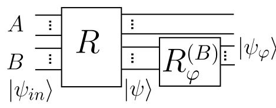
<figcaption class="paper-figure-caption"><b>Fig 1.</b> Fig. 1. Setup for ancilla-assisted single-parameter estimation using Gaussian probes. The probe consists of mA ancilla modes and mB signal modes. The initial state |ψin⟩is taken to be a tensor product of single-mode squeezed coherent states. By applying a passive linear interferometer R, we obtain the general pure Gaussian probe state |ψ⟩. The mB signal modes are transmitted through the passive lossless Gaussian unitary Rφ = I(A) ⊗R(B) φ , which encodes the unknown parameter φ, while the mA ancilla modes remain unchanged. The final output state is denoted by |ψφ⟩.</figcaption>
</figure>
</div>

<p><strong>Summary.</strong> This paper derives a no-go theorem for quantum parameter estimation in lossless passive-unitary channels. It proves that constraining the energy only in the signal modes, while allowing infinite energy in ancilla modes, does not improve the ultimate estimation precision (QFI). The result shows that the optimal measurement is entirely determined by the energy budget allocated to the signal modes.</p>
<p><strong>Why it may be interesting.</strong> This work provides fundamental limits on quantum estimation precision in passive quantum channels, which is crucial for understanding the ultimate performance of quantum sensors and quantum communication protocols.</p>
<details>
<summary>Detailed structure</summary>
<p><strong>Main problem.</strong> The paper investigates the maximum Quantum Fisher Information (QFI) achievable for estimating a parameter encoded in a passive-unitary transformation applied to a multimode Gaussian state.</p>
<p><strong>Main result.</strong> It establishes a no-go theorem proving that allowing arbitrarily large energy in locally retained ancilla modes does not enhance the maximum QFI beyond the limit set by the signal-energy constraint.</p>
<p><strong>Method.</strong> The authors calculate the QFI by deriving and bounding contributions from the covariance matrix and displacement vector, utilizing matrix inequalities and analyzing the structure of optimal probe states.</p>
<p><strong>Model / system.</strong> The system models a bipartite sensing setup involving $m_A$ ancilla modes and $m_B$ signal modes, where the probe state is a pure Gaussian state evolving under a passive Gaussian unitary. The parameter is encoded via a passive Gaussian unitary acting only on the signal modes.</p>
<p><strong>Key observables.</strong> Quantum Fisher Information (QFI), $    ext{F}_\varphi$; covariance matrix ($\Gamma$); mean photon number ($ar{n}$).</p>
<p><strong>Important parameters / regimes.</strong> Mean photon number constraint ($ar{n}$) on the signal modes; the structure of the passive Gaussian unitary transformation.</p>
<p><strong>Assumptions / limitations.</strong> The estimation process is restricted to lossless passive-unitary transformations, and the probe state is a pure Gaussian state.</p>
<p><strong>Figures summary.</strong> Figure 1 illustrates the general setup involving ancilla and signal modes for the estimation process.</p>
<p><strong>Paper structure.</strong> The paper analyzes the QFI by decomposing it into parts related to the covariance matrix and displacement vector, deriving upper bounds using matrix inequalities, and ultimately proving the no-go theorem by showing the optimal state requires zero signal displacement energy.</p>
</details>
<details>
<summary>Abstract</summary>
<p>We study the maximum quantum Fisher information (QFI) for estimating a single parameter embedded in a generic multimode lossless passive Gaussian unitary using general Gaussian probes under a signal-energy constraint. Unlike previous work, which imposed a total energy constraint on the full probe, we constrain only the transmitted signal modes while allowing an arbitrary number of locally retained ancilla modes with arbitrarily large energy. We prove that this additional freedom does not increase the maximum achievable QFI; the optimum remains identical to that attainable without extra ancilla energy. The same conclusion also extends to the sequential setting under a total energy constraint. We also characterize the family of optimal probe states and show that entanglement is not necessary to attain the optimum in the lossless setting. This extends the result of Matsubara et al. to the physically motivated signal-energy-constrained scenario and establishes a no-go theorem for ancilla-assisted Gaussian enhancement in noiseless passive-unitary estimation.</p>
</details>
<p><sub><a href="#top">↑ back to top</a></sub></p>

<p><a id="paper-2606.01696"></a></p>
<h3 id="significance-of-time-convolutionless-mode-coupling-theory-in-capturing-the-dynamics-of-glass-forming-liquids"><a href="http://arxiv.org/abs/2606.01696v1">Significance of time-convolutionless mode-coupling theory in capturing the dynamics of glass-forming liquids</a></h3>
<p><strong>Authors:</strong> Michio Tokuyama<br>
<strong>Type:</strong> theory · <strong>Category:</strong> statistical mechanics · <strong>PDF:</strong> <a href="https://arxiv.org/pdf/2606.01696v1">https://arxiv.org/pdf/2606.01696v1</a><br>
<strong>Analysis basis:</strong> full PDF text, analyzed in chunks
<strong>Topic relevance:</strong> <code>Keldysh / 2PI / non-Gaussian methods</code> <strong>1/5</strong> · <code>non-equilibrium dynamics</code> <strong>1/5</strong></p>
<div class="figure-strip-hint">↔ Scroll figures horizontally</div>
<div class="paper-figures-scroll">
<figure class="paper-figure-card">
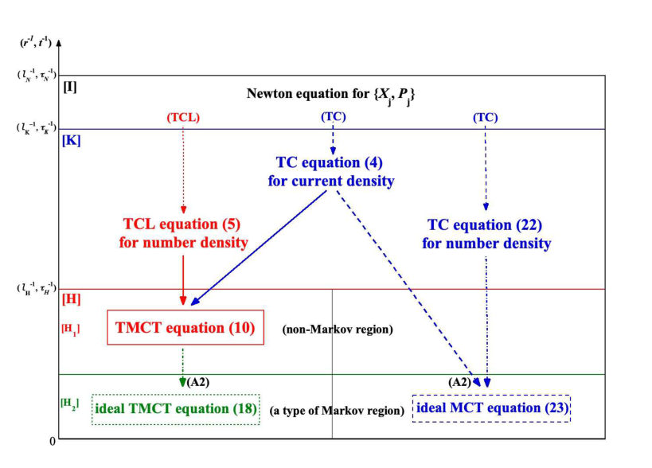
<figcaption class="paper-figure-caption"><b>Fig 1.</b> FIG. 1: (Color online) Classification of the basic equations discussed in the present paper into three stages, [N], [K], and [H], depending on a space (r)-time (t) scale, where ℓi and τi indicate the characteristic length and time of interest, respectively. Numbers in the figure indicate equation numbers.</figcaption>
</figure>
</div>

<p><strong>Summary.</strong> This paper rigorously compares Time-Convolutionless Mode-Coupling Theory (TMCT) against standard MCT for glass-forming liquids. It argues that the choice between time-convolution (TC) and time-convolutionless (TCL) formalisms is crucial, showing that TMCT correctly captures the dynamics across different time scales. The results indicate that TMCT yields more physically accurate predictions for the glass transition compared to ideal MCT.</p>
<p><strong>Why it may be interesting.</strong> The rigorous comparison of different theoretical frameworks (MCT vs. TMCT) for non-equilibrium dynamics, especially concerning the choice of mathematical formalism (TC vs. TCL), provides deep insights into the limitations of standard theoretical tools when applied to complex many-body systems.</p>
<details>
<summary>Detailed structure</summary>
<p><strong>Main problem.</strong> The paper aims to demonstrate the superiority of the Time-Convolutionless Mode-Coupling Theory (TMCT) over conventional Mode-Coupling Theory (MCT) in accurately describing the complex dynamics of glass-forming liquids.</p>
<p><strong>Main result.</strong> TMCT provides a fundamentally different and more physically consistent description of the dynamics, particularly in the intermediate and long-time regimes, leading to critical parameters that align better with experimental expectations than ideal MCT.</p>
<p><strong>Method.</strong> The authors compare two projection operator methods (Time-Convolution vs. Time-Convolutionless) and apply them to derive and solve coupled equations for correlation functions, utilizing Laplace transforms and asymptotic analysis.</p>
<p><strong>Model / system.</strong> The system studied is a three-dimensional equilibrium glass-forming liquid, modeled using density-density correlation functions and analyzed across different space-time scales (microscopic, kinetic, hydrodynamic).</p>
<p><strong>Key observables.</strong> Intermediate scattering function $f_\alpha(q, t)$, non-Gaussian parameter $\alpha_2(t)$, self-diffusion coefficient $D_L^s$, and the non-ergodicity parameter $f_\alpha(q)$.</p>
<p><strong>Important parameters / regimes.</strong> Critical volume fraction ($\phi_c$ or $\phi_g$), temperature $T$, and wavevector $q$.</p>
<p><strong>Assumptions / limitations.</strong> The analysis relies on comparing the full TMCT against ideal MCT, noting that approximations like (A2) lead to unphysical results ($\alpha_2(t) < 0$) in both formalisms.</p>
<p><strong>Figures summary.</strong> Figure 1 illustrates the classification of basic equations into three distinct space-time scale stages: microscopic [N], kinetic [K], and hydrodynamic [H].</p>
<p><strong>Paper structure.</strong> The paper reviews the theoretical basis by comparing TC and TCL projection operators, applies these to the glass-forming liquid dynamics, derives the full TMCT equation, simplifies it into a recursion equation, and finally compares its predictions against ideal MCT across various physical observables and asymptotic limits.</p>
</details>
<details>
<summary>Abstract</summary>
<p>This paper demonstrates the significance of the recently proposed time-convolutionless mode-coupling theory (TMCT) in capturing the dynamics of glass-forming liquids. The origin of the primary differences between ideal MCT and TMCT is comprehensively explored from a unified perspective. First, we review two distinct projection operator methods in the Heisenberg picture: the time-convolution (TC) formulation proposed by Mori and the time-convolutionless (TCL) formulation proposed by Tokuyama and Mori. We show that the appropriate choice between these frameworks fundamentally depends on the space-time scales of the relevant variables. In TMCT, the TC formulation is applied to the current density, whereas the TCL formulation is applied to the number density because the latter operates on a significantly longer space-time scale. In contrast, ideal MCT applies the TC formulation to both densities. Consequently, the governing equation in TMCT is timeconvolutionless, whereas the ideal MCT equation features a time-convolution form. This fundamental difference significantly affects various physical quantities near the glass transition. Finally, the full TMCT equation is transformed into a simplified recursion equation to facilitate numerical analysis, and the key predictions of TMCT are compared with those of ideal MCT</p>
</details>
<p><sub><a href="#top">↑ back to top</a></sub></p>

<p><a id="paper-2606.01004"></a></p>
<h3 id="surface-excitations-energy-loss-and-decoherence-in-electron-interferometry"><a href="http://arxiv.org/abs/2606.01004v1">Surface Excitations, Energy Loss, and Decoherence in Electron Interferometry</a></h3>
<p><strong>Authors:</strong> David Kordahl<br>
<strong>Type:</strong> theory · <strong>Category:</strong> other · <strong>PDF:</strong> <a href="https://arxiv.org/pdf/2606.01004v1">https://arxiv.org/pdf/2606.01004v1</a><br>
<strong>Analysis basis:</strong> full PDF text, analyzed in chunks
<strong>Topic relevance:</strong> <code>correlated / nonlocal dissipation</code> <strong>1/5</strong> · <code>interference shaping light</code> <strong>1/5</strong></p>
<div class="figure-strip-hint">↔ Scroll figures horizontally</div>
<div class="paper-figures-scroll">
<figure class="paper-figure-card">
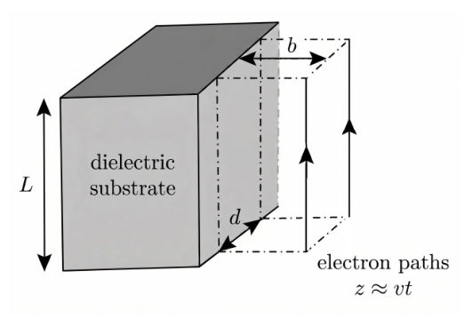
<figcaption class="paper-figure-caption"><b>Fig 1.</b> FIG. 1. Schematic of the interaction geometry. Two electron paths are separated by a distance d, propagate at a height b above the substrate with velocity v, over a length L.</figcaption>
</figure>
<figure class="paper-figure-card">
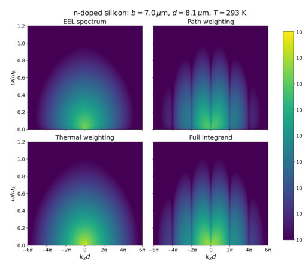
<figcaption class="paper-figure-caption"><b>Fig 2.</b> FIG. 2. Mode-resolved contributions to the decoherence rate integrand in the (kx, ω) plane for an electron beam at height b = 7.0 µm above an n-doped silicon surface, with path sepa- ration d = 8.1 µm, and at temperature T = 293 K. (Dielectric parameters are given in Eq. 38.) Top left: differential EEL spectrum d3P/(dz dω dkx). Top right: product of the EEL spectrum with the path weighting factor 1 −cos(kxd). Bot- tom left: product of EEL spectrum with the thermal factor coth(ℏω/2kBT). Bottom right: the full integrand entering γ(b, d, T)—the differential EEL spectrum multiplied both by the path and the thermal weighting.</figcaption>
</figure>
<figure class="paper-figure-card">
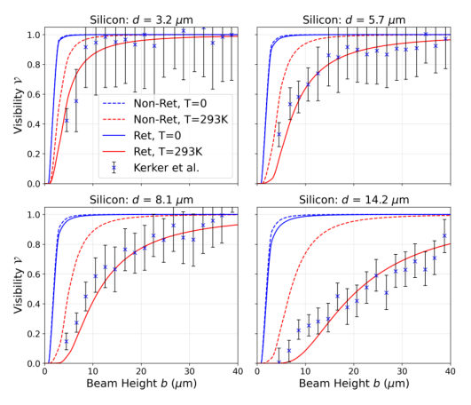
<figcaption class="paper-figure-caption"><b>Fig 3.</b> FIG. 3. Visibility V as a function of surface distance b for several fixed path separations d (indicated in each panel), for a split electron passing over n-doped silicon. Discrete points show digitized results from Kerker et al. Dashed curves cor- respond to non-retarded models (Eq. 28), and solid curves correspond to retarded models (Eq. 32); blue curves use the zero-temperature decoherence rate (Eq. 22), while red curves include the thermal correction at T = 293 K (Eq. 37). Both thermal and retardation effects are important to the experi- mental signal.</figcaption>
</figure>
<figure class="paper-figure-card">
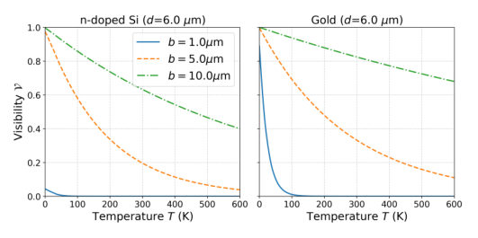
<figcaption class="paper-figure-caption"><b>Fig 4.</b> FIG. 5. Fringe visibility V as a function of substrate temper- ature T for three impact parameters b, at fixed path separa- tion d = 6.0 µm, computed using the retarded model (Eq. 32) with thermal weighting (Eq. 37) for n-doped silicon parame- ters (Eq. 38) and for gold parameters (Eq. 39).</figcaption>
</figure>
<figure class="paper-figure-card">
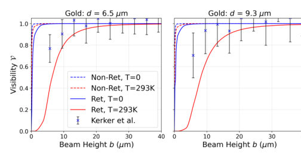
<figcaption class="paper-figure-caption"><b>Fig 5.</b> FIG. 4. Results as in Fig. 3, but for gold instead of n-doped silicon. The retarded predictions require a low-frequency cut- off to avoid the ω →0 Drude divergence, discussed in text. As in silicon, both thermal and retardation effects are impor- tant, but here the retardation effects dominate.</figcaption>
</figure>
</div>

<p><strong>Summary.</strong> This paper models decoherence in electron interferometry near surfaces by linking the loss of fringe visibility to the substrate's electronic excitation spectrum (EELS). The authors show that the decoherence rate depends on the EELS spectrum weighted by the path separation, concluding that both finite temperature and retardation effects are crucial for accurate quantitative predictions. This suggests that fringe visibility can be used as a sensitive, near-field thermometer for the substrate.</p>
<p><strong>Why it may be interesting.</strong> This work provides a concrete, measurable link between quantum interference phenomena (visibility loss) and the continuum of excitations in a material (EELS), offering a novel, near-field thermometric probe.</p>
<details>
<summary>Detailed structure</summary>
<p><strong>Main problem.</strong> The paper develops a mode-resolved description of decoherence in split-beam electron interferometry near dielectric surfaces and connects this process to Electron Energy-Loss Spectroscopy (EELS).</p>
<p><strong>Main result.</strong> The decoherence rate is found to be a weighted integral over the differential EELS spectrum, and both retardation and finite temperature effects are necessary for quantitative agreement with experiments.</p>
<p><strong>Method.</strong> The analysis involves deriving a rate equation for fringe visibility decay, relating the decoherence rate to the EELS spectrum via a path distinguishability factor.</p>
<p><strong>Model / system.</strong> The system is electron interferometry using two electron trajectories separated by distance $d$ above a dielectric substrate. The substrate response is modeled using its dielectric function $\epsilon(\omega)$.</p>
<p><strong>Key observables.</strong> Fringe visibility ($V$), decoherence rate ($\gamma(b, d)$), and the differential EELS spectrum.</p>
<p><strong>Important parameters / regimes.</strong> Path separation ($d$), electron height ($b$), interaction length ($L$), temperature ($T$), and the substrate's dielectric function $\epsilon(\omega)$.</p>
<p><strong>Assumptions / limitations.</strong> The analysis uses the Markovian approximation and initially considers first-order coupling to the substrate excitations.</p>
<p><strong>Figures summary.</strong> Figures illustrate the geometry of the interaction, compare predicted visibility vs. beam height for different models (thermal vs. retarded), and show temperature dependence of visibility.</p>
<p><strong>Paper structure.</strong> The paper builds from the fundamental decoherence rate calculation, derives the rate equation for visibility decay, and then compares the resulting model against established experimental results, emphasizing the necessity of thermal and retardation corrections.</p>
</details>
<details>
<summary>Abstract</summary>
<p>We develop a mode-resolved description of decoherence in split-beam electron interferometry near dielectric surfaces, and show how it connects to models from electron energy-loss spectroscopy (EELS). The central result is that the decoherence rate is a weighted integral over the differential EELS spectrum, with a factor $1-\cos(k_x d)$ encoding the path distinguishability of the two electron trajectories. Incorporating retardation and thermal occupation reproduces the macroscopic QED model of Scheel and Buhmann. We compare non-retarded vs. retarded and non-thermal vs. thermally weighted variants of the model against published results from Kerker et al., finding that both retardation and finite temperature are required for reasonable quantitative agreement. The thermal weighting suggests an application: fringe visibility as a near-field thermometric probe of the substrate, sensitive to the evanescent regime inaccessible to far-field methods.</p>
</details>
<p><sub><a href="#top">↑ back to top</a></sub></p>

<p><a id="paper-2606.02542"></a></p>
<h3 id="chutes-and-ladders-dynamical-automorphisms-via-the-zx-calculus"><a href="http://arxiv.org/abs/2606.02542v1">Chutes and Ladders: Dynamical Automorphisms via the ZX-Calculus</a></h3>
<p><strong>Authors:</strong> Alexander Frei, Sascha Zakaib-Bernier, Zachary Mann, Michael Vasmer, Victor V. Albert<br>
<strong>Type:</strong> theory · <strong>Category:</strong> quantum information and computing · <strong>PDF:</strong> <a href="https://arxiv.org/pdf/2606.02542v1">https://arxiv.org/pdf/2606.02542v1</a><br>
<strong>Analysis basis:</strong> full PDF text, analyzed in chunks
<strong>Topic relevance:</strong> <code>entanglement &amp; information structure</code> <strong>1/5</strong></p>
<div class="figure-strip-hint">↔ Scroll figures horizontally</div>
<div class="paper-figures-scroll">
<figure class="paper-figure-card">
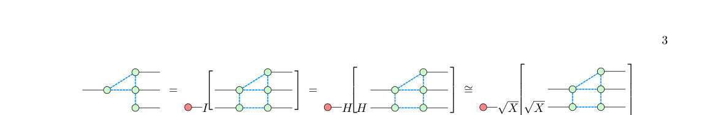
<figcaption class="paper-figure-caption"><b>Fig 1.</b> FIG. 1. ZX-encoding graphs of subsystem codes that gauge fix into a stabilizer code. From left to right, we have the ZX- encoding graph of a stabilizer code and, in brackets, the subsystem codes that Z/X/Y gauge fix into the stabilizer code.</figcaption>
</figure>
<figure class="paper-figure-card">
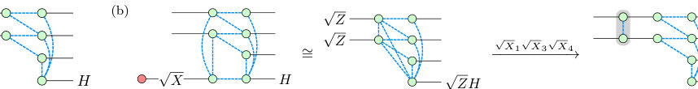
<figcaption class="paper-figure-caption"><b>Fig 2.</b> FIG. 2. Dynamical automorphism of the [[4, 2, 2]] code. We extend the original ZX-encoding graph (a) to construct a subsystem code (b) that Y gauge-fixes into the [[4, 2, 2]] code up to some local Clifford gates and a logical CZ gate (highlighted in gray).</figcaption>
</figure>
<figure class="paper-figure-card">
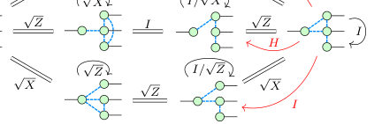
<figcaption class="paper-figure-caption"><b>Fig 3.</b> FIG. 4. Local Clifford (LC) orbit of the 3-qubit code from Fig. 3a, whose ZX-encoding graph is on the far right side of the diagram. Here, the equalities between ZX-encoding graphs refer to LC equivalence, whereas the looping arrows represent LC gates that bring the graph to itself. The gates above them keep track of the logical gate induced by the given LC, and we do not keep track of the physical gates they in- duce. The red arrows correspond to the X and Y gauge fixings seen in Fig. 3b &amp; Fig. 3c, respectively.</figcaption>
</figure>
<figure class="paper-figure-card">
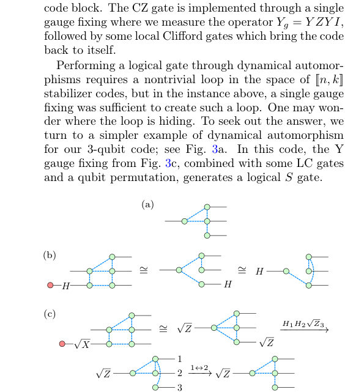
<figcaption class="paper-figure-caption"><b>Fig 4.</b> FIG. 3. Gauge fixing examples and dynamical automorphism for a 3-qubit code. (a) ZX-encoding graph of this code. (b) X gauge fixing of a subsystem code built by extending (a), giving two equivalent ZX-encoding graphs. (c) Dynamical automorphism generating a logical S gate consisting of a Y gauge fixing, local Clifford gates, and a qubit permutation.</figcaption>
</figure>
<figure class="paper-figure-card">
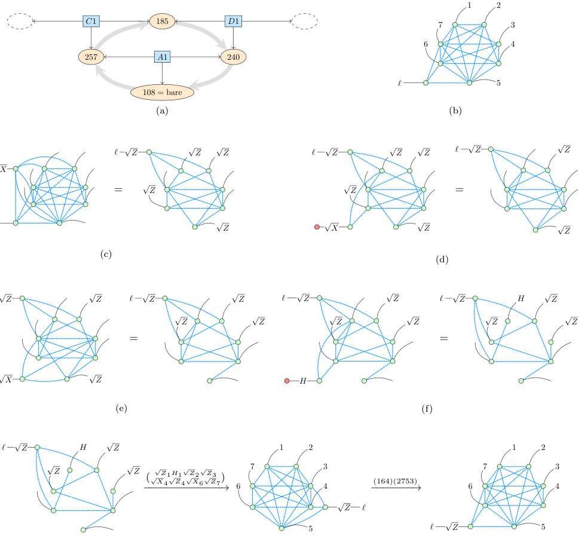
<figcaption class="paper-figure-caption"><b>Fig 5.</b> FIG. 5. Dynamical automorphism for the bare code implementing a logical S gate: (a) Closed loop in the space of [[7, 1, 3]] stabilizer codes. The blue squares are subsystem codes that Z/X/Y gauge fix into stabilizer codes (orange bubbles). See [64, Figure 12] for more details. (b) ZX-encoding graph of the [[7, 1, 3]] bare code [68]. We label the logical qubit wire ℓand the physical qubit wires 1, . . . , 7. (c) Y -gauge fixing of subsystem A1 from the bare code (108) into stabilizer code (257). (d) Y -gauge fixing of C1 from (257) into (185). (e) Y -gauge fixing of D1 from (185) into (240). (f) X-gauge fixing of A1 from (240) back into the bare code (up to local Cliffords and qubit...</figcaption>
</figure>
</div>

<p><strong>Summary.</strong> This paper introduces a powerful graphical method using the ZX-calculus to study dynamical automorphisms in quantum error correction codes. By modeling code switching as a path in the space of stabilizer codes, the authors provide a systematic way to construct these automorphisms. This machinery allows for the theoretical design and search for implementations of complex logical quantum gates.</p>
<p><strong>Why it may be interesting.</strong> The rigorous mathematical framework connecting gauge fixing, graph theory, and code structure provides powerful tools for understanding the underlying symmetries and computational capabilities of quantum error-correcting codes.</p>
<details>
<summary>Detailed structure</summary>
<p><strong>Main problem.</strong> To develop a machine-interpretable method for constructing dynamical automorphisms for quantum error correction (QEC) codes, particularly for handling dynamical stabilizer codes.</p>
<p><strong>Main result.</strong> The authors show that dynamical automorphisms can be constructed by viewing code switching as a closed loop in the space of stabilizer codes, which they term 'chutes and ladders' relative to local Clifford operations.</p>
<p><strong>Method.</strong> The core method extends the ZX-calculus to model gauge fixing, which is used to implement these paths in the space of stabilizer codes by combining gauge-fixing steps.</p>
<p><strong>Model / system.</strong> The work focuses on stabilizer codes, represented by their ZX-encoding graphs, and extends this framework to subsystem codes and dynamical codes. The mathematical tools involve the ZX-calculus, graph theory, and symplectic representations.</p>
<p><strong>Key observables.</strong> Dynamical automorphisms, logical gates (e.g., logical S or phase gate), and the structure of the Local Clifford (LC) orbit graph.</p>
<p><strong>Important parameters / regimes.</strong> The code parameters $[[n, k, d]]$ (e.g., the 7-qubit code), and the local Clifford group elements.</p>
<p><strong>Assumptions / limitations.</strong> The method relies on the connection between measurement-based code-switching and gauge fixing, and the ability to define a unique normal form for ZX-encoding graphs.</p>
<p><strong>Figures summary.</strong> Figures illustrate ZX-encoding graphs, showing how gauge fixing creates closed loops (dynamical automorphisms) in the space of stabilizer codes, and demonstrating the implementation of specific logical gates.</p>
<p><strong>Paper structure.</strong> The paper systematically develops the ZX-calculus formalism for subsystem codes, establishes a unique normal form for these graphs, and then applies this framework to show that gauge fixing generates dynamical automorphisms that can implement desired logical gates.</p>
</details>
<details>
<summary>Abstract</summary>
<p>The ZX-calculus is a powerful graphical language for manipulating quantum circuits, which has recently found many applications in quantum error correction. We extend this language to handle Floquet and other dynamical stabilizer codes via the connection between measurement-based code switching and gauge fixing (arXiv:1810.10037). We combine gauge-fixing steps to implement a closed loop in the space of stabilizer codes, returning to the original codespace up to a logical Clifford gate. These measurement-based paths in the space of stabilizer codes can be viewed as shortcuts, or "chutes and ladders", relative to single-qubit Clifford operations and qubit permutations. This yields a machine-interpretable method for constructing dynamical automorphisms and facilitates the search for implementations of desired logical gates. As an example, we implement a logical phase gate via distance-preserving code switching for the seven-qubit code bare code (arXiv:1702.01155), which has no non-trivial logical Clifford gates based on single-qubit Clifford operations and qubit permutations (arXiv:2409.18175).</p>
</details>
<p><sub><a href="#top">↑ back to top</a></sub></p>

<p><a id="paper-2606.00806"></a></p>
<h3 id="computational-phase-transitions-in-binary-compressed-sensing-quantum-annealing-inside-the-relaxation-gap"><a href="http://arxiv.org/abs/2606.00806v1">Computational Phase Transitions in Binary Compressed Sensing: Quantum Annealing Inside the Relaxation Gap</a></h3>
<p><strong>Authors:</strong> William Hahn, Natalia Romero<br>
<strong>Type:</strong> both · <strong>Category:</strong> quantum information and computing · <strong>PDF:</strong> <a href="https://arxiv.org/pdf/2606.00806v1">https://arxiv.org/pdf/2606.00806v1</a><br>
<strong>Analysis basis:</strong> full PDF text, analyzed in chunks
<strong>Topic relevance:</strong> <code>QC/QI experiment</code> <strong>1/5</strong></p>
<div class="figure-strip-hint">↔ Scroll figures horizontally</div>
<div class="paper-figures-scroll">
<figure class="paper-figure-card">
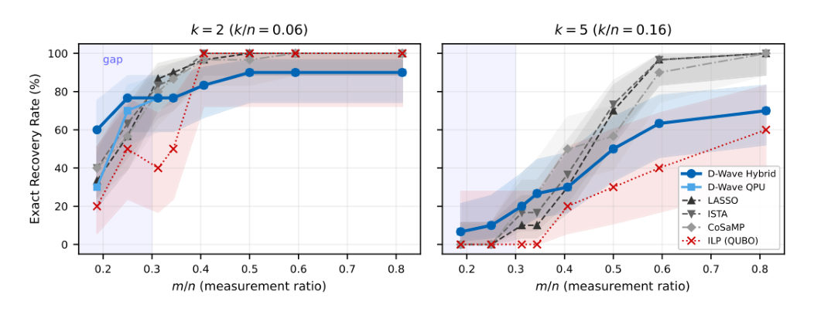
<figcaption class="paper-figure-caption"><b>Fig 1.</b> Fig. 1. Phase transition in exact recovery rate versus measurement ratio m/n for k = 2 (left) and k = 5 (right) at n = 32. Shaded region indicates the relaxation gap. At k = 2, D-Wave Hybrid leads at low m/n; AMP is competitive. At k = 5, D-Wave is the only solver with any recovery at m/n ≤0.25. Bands: 95% Wilson CIs.</figcaption>
</figure>
<figure class="paper-figure-card">
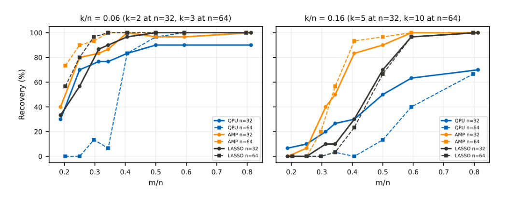
<figcaption class="paper-figure-caption"><b>Fig 2.</b> Fig. 2. Scaling comparison: n = 32 (solid, circles) versus n = 64 (dashed, squares) at matched sparsity ratios. Left: k/n ≈0.06. Right: k/n ≈0.16. The QPU advantage at n = 32 does not extend to n = 64, where AMP dominates. The embedding boundary is visible as the gap between QPU curves at the two scales.</figcaption>
</figure>
<figure class="paper-figure-card">
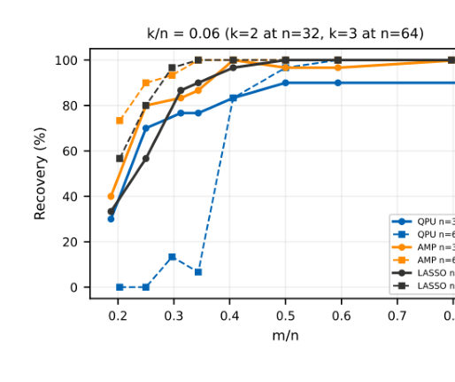
<figcaption class="paper-figure-caption"><b>Fig 3.</b> Fig. 4 (right panel) maps the quantum advantage topol- ogy ∆R = RD-Wave −Rclassical across the full (k/n, m/n) plane. The positive (blue) region corresponds to the re- laxation gap: the advantage is largest at low k/n and low m/n, precisely where the Donoho-Tanner theory predicts ℓ1 failure. This landscape structure—where the QUBO ground state is shallow relative to surrounding incorrect basins—may generalize to other dense QUBO problems arising from Gram matrices AT A, suggesting quantum annealing’s advantage is not specific to compressed sensing</figcaption>
</figure>
<figure class="paper-figure-card">
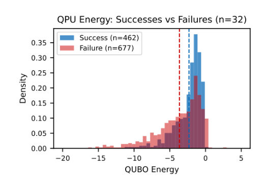
<figcaption class="paper-figure-caption"><b>Fig 4.</b> Fig. 3. QUBO energy distribution for D-Wave QPU successes versus failures at n = 32. Successful recoveries find lower energies (ground state basin). Failures are trapped in higher-energy local minima. Dashed lines: means.</figcaption>
</figure>
<figure class="paper-figure-card">
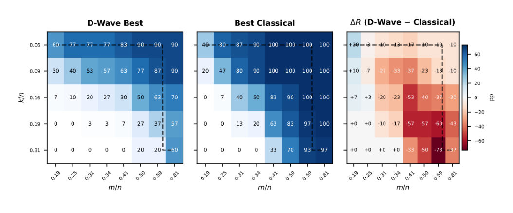
<figcaption class="paper-figure-caption"><b>Fig 5.</b> Fig. 4. Recovery heatmaps with Donoho-Tanner phase transition boundary [4]–[6] (dashed). Left: D-Wave best (hybrid or QPU). Center: Best classical solver. Right: Quantum advantage topology ∆R = RD-Wave−Rclassical (blue = quantum advantage, red = classical advantage). The advantage concentrates below the DT boundary.</figcaption>
</figure>
</div>

<p><strong>Summary.</strong> This paper explores quantum annealing for solving sparse signal recovery problems in compressed sensing, focusing on a regime called the 'relaxation gap'. The authors report that quantum annealing successfully recovers signals in this gap where even the best classical algorithm, AMP, fails. While the advantage is shown empirically for small systems, the work suggests a potential role for quantum tunneling in solving classically intractable optimization barriers.</p>
<p><strong>Why it may be interesting.</strong> The work directly applies quantum computation (quantum annealing) to a hard optimization problem (sparse recovery), providing empirical evidence of quantum advantage in a regime where classical methods are theoretically optimal, which is highly relevant to quantum algorithms for optimization.</p>
<details>
<summary>Detailed structure</summary>
<p><strong>Main problem.</strong> The paper investigates the computational phase transition boundary in binary compressed sensing, specifically identifying a regime where quantum annealing outperforms all tested classical recovery methods.</p>
<p><strong>Main result.</strong> At a specific point in the 'relaxation gap' ($n=32$), quantum annealing achieved exact signal recovery (7%) where the best classical solver (AMP) failed entirely (0%), suggesting a quantum advantage in this finite-size setting.</p>
<p><strong>Method.</strong> The authors compared the performance of D-Wave quantum annealing against established classical algorithms like AMP, using energy landscape analysis to hypothesize that quantum tunneling is responsible for the observed advantage.</p>
<p><strong>Model / system.</strong> The problem is formulated as recovering sparse binary signals ($\mathbf{x} \in \{0, 1\}^n$) from measurements ($\mathbf{y} = \mathbf{A}\mathbf{x}$), mapped onto a QUBO Hamiltonian solved on a D-Wave quantum annealer.</p>
<p><strong>Key observables.</strong> Exact recovery rate (%), QUBO ground state energy, and comparison against the Bayes-optimal classical threshold.</p>
<p><strong>Important parameters / regimes.</strong> The critical regime is the 'relaxation gap' (below the Donoho-Tanner $\ell_1$ threshold), with specific tested parameters being $n=32, k=5, m/n=0.19$.</p>
<p><strong>Assumptions / limitations.</strong> The observed advantage is preliminary, finite-size evidence, and the mechanism relies on the hypothesis that quantum tunneling overcomes local minima trapping classical search.</p>
<p><strong>Figures summary.</strong> Figures map the phase transition boundaries and compare recovery rates across different system sizes ($n=32$ vs $n=64$), highlighting the quantum advantage in the gap region.</p>
<p><strong>Paper structure.</strong> The paper establishes the problem in compressed sensing, details the comparison between quantum and classical solvers, presents empirical results showing quantum advantage in the gap, analyzes the energy landscape, and concludes by outlining the limitations and need for larger-scale confirmation.</p>
</details>
<details>
<summary>Abstract</summary>
<p>We map the computational phase transition boundary in binary compressed sensing and identify a regime where D-Wave's quantum annealer recovers signals in a region where all tested classical methods fail, including Approximate Message Passing (AMP), which achieves the Bayes-optimal recovery threshold asymptotically for Gaussian matrices. In 19,775 experiments (n in {32, 64}, nine classical solvers, two D-Wave modes), we find that quantum annealing recovers sparse binary signals in the relaxation gap -- the regime below the Donoho-Tanner l1 phase transition where the l0 solution exists but convex relaxations fail. At n=32, k=5, m/n=0.19, D-Wave achieves 7% exact recovery while AMP and eight other solvers score 0% across 250 combined trials (Fisher exact p=0.018). At n=64, embedding overhead limits the QPU, but D-Wave's hybrid solver remains competitive with AMP. Energy landscape analysis reveals that the QUBO ground state contains the true signal, but incorrect solutions occupy shallower local basins that trap classical search -- a structure consistent with quantum tunneling dynamics. To our knowledge, this constitutes preliminary finite-size evidence that quantum annealing succeeds in a narrow regime where all tested classical methods, including the Bayes-optimal AMP, fail within a well-characterized combinatorial inference problem. Confirmation at larger n, higher trial counts, and with stronger classical controls remains an open problem.</p>
</details>
<p><sub><a href="#top">↑ back to top</a></sub></p>

<p><a id="paper-2606.02343"></a></p>
<h3 id="defect-holonomy-near-rank-deficient-mixed-states"><a href="http://arxiv.org/abs/2606.02343v1">Defect Holonomy Near Rank-Deficient Mixed States</a></h3>
<p><strong>Authors:</strong> Yu-Huan Huang, Xu-Yang Hou, Hao Guo<br>
<strong>Type:</strong> theory · <strong>Category:</strong> other · <strong>PDF:</strong> <a href="https://arxiv.org/pdf/2606.02343v1">https://arxiv.org/pdf/2606.02343v1</a><br>
<strong>Analysis basis:</strong> full PDF text, analyzed in chunks
<strong>Topic relevance:</strong> <code>entanglement &amp; information structure</code> <strong>1/5</strong></p>
<div class="figure-strip-hint">↔ Scroll figures horizontally</div>
<div class="paper-figures-scroll">
<figure class="paper-figure-card">
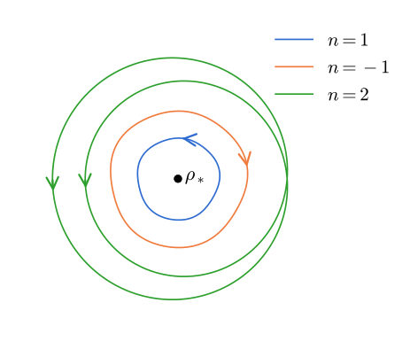
<figcaption class="paper-figure-caption"><b>Fig 1.</b> Figure 1: Schematic illustration of the punctured manifold M× = M \ {ρ∗}. The removed rank-deficient point ρ∗acts as a geometric defect, rendering loops encircling the puncture noncontractible. The three representative loops correspond to winding numbers n = 1, n = 2, and n = −1, which generate distinct homotopy classes in π1(M×) ≃Z.</figcaption>
</figure>
<figure class="paper-figure-card">
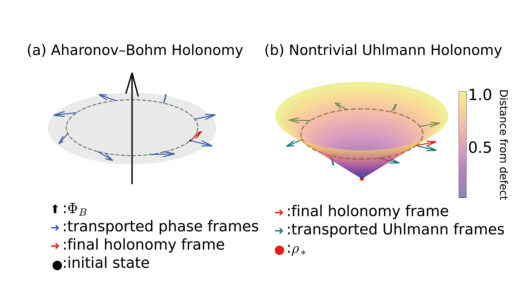
<figcaption class="paper-figure-caption"><b>Fig 2.</b> Figure 2: Comparison between the Aharonov–Bohm effect and the Uhlmann defect holonomy. (a) Parallel transport around a magnetic flux tube in the Aharonov–Bohm effect, illustrating the acquired geometric phase ΦB. (b) Paral- lel transport on the punctured mixed-state manifold M× = M \ {ρ∗}, where a loop encircling the rank-deficient point ρ∗ acquires a nontrivial Uhlmann holonomy.</figcaption>
</figure>
<figure class="paper-figure-card">
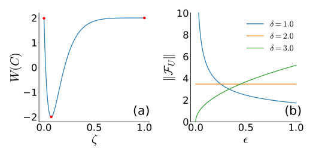
<figcaption class="paper-figure-caption"><b>Fig 3.</b> Figure 3: (a) Wilson loop variable W (C) = Tr U(C) as a function of the spectral ratio ζ. The red points mark the representative values ζ = 1, ζ = 7−4 √</figcaption>
</figure>
</div>

<p><strong>Summary.</strong> This work analyzes the geometry of mixed quantum states near rank-changing singularities, identifying these points as geometric defects. The authors show that while local curvature diverges path-dependently, the global topological invariant—the Uhlmann holonomy—remains robust. This holonomy provides a continuous classification of the defect, generalizing concepts from Berry phase physics to mixed systems.</p>
<p><strong>Why it may be interesting.</strong> It provides a powerful geometric tool (holonomy) to characterize singularities in the space of quantum states that are robust against local perturbations, which is crucial for understanding quantum phase transitions or decoherence effects.</p>
<details>
<summary>Detailed structure</summary>
<p><strong>Main problem.</strong> The paper investigates the geometric structure of mixed quantum states near points where the rank of the density matrix changes, treating these singularities as effective geometric defects.</p>
<p><strong>Main result.</strong> The robust geometric information is encoded not in the path-dependent Uhlmann curvature, but in the global, asymptotically robust Uhlmann holonomy around the defect, which is classified by a continuous, non-quantized variable.</p>
<p><strong>Method.</strong> The authors use the Uhlmann connection and holonomy, generalizing Berry phase concepts to mixed states, by analyzing the topology of the punctured state manifold.</p>
<p><strong>Model / system.</strong> The analysis is performed on the manifold of mixed quantum states ($
ho$), using an exactly solvable qutrit model ($  ext{SU}(2)$ sector) as a primary test case.</p>
<p><strong>Key observables.</strong> Uhlmann holonomy, Wilson loop variable $W(C) = 	ext{Tr} U(C)$, and the Uhlmann curvature $\lVert F_U 
Vert$.</p>
<p><strong>Important parameters / regimes.</strong> Spectral ratios of vanishing eigenvalues ($\zeta$), and the scaling exponents ($\alpha_a$) governing eigenvalue approach to the singularity.</p>
<p><strong>Assumptions / limitations.</strong> The analysis requires restricting to the full-rank sector and working on the punctured manifold $M^	imes$ to define the holonomy.</p>
<p><strong>Figures summary.</strong> Figures schematically illustrate the punctured manifold $M^	imes$ and the non-trivial fundamental group $\pi_1(M^	imes) \simeq \mathbb{Z}$. They also plot the continuous dependence of the Wilson loop variable $W(C)$ on spectral ratios and the power-law scaling of the curvature magnitude.</p>
<p><strong>Paper structure.</strong> The paper establishes the singularity at rank-deficient points, contrasts the path-dependent curvature singularity (Theorem 2) with the robust asymptotic holonomy (Theorem 1), and derives the continuous classification of the defect via the Wilson loop variable.</p>
</details>
<details>
<summary>Abstract</summary>
<p>We investigate the geometry of mixed quantum states near rank-changing points, showing that these singularities function as effective geometric defects. The Uhlmann connection is well-defined only on the full-rank sector of the density-matrix manifold, while rank-deficient states form singular boundary strata where the bundle structure degenerates. By restricting to a punctured state manifold that excludes the singular set, we obtain a well-defined gauge structure and identify an asymptotically robust invariant: the Uhlmann holonomy around noncontractible loops encircling the defect. In an exactly solvable qutrit model, a restricted submanifold emerges on which the connection is locally flat yet carries nontrivial monodromy, analogous to flat connections with Aharonov--Bohm-type transport. The holonomy depends only on the ratios of the vanishing eigenvalues under frozen radial dependence of the eigenbasis geometry and a fixed angular loop. In contrast, the Uhlmann curvature may diverge path-dependently when eigenvalues shrink with distinct powers, with a leading spectral-prefactor scaling law, establishing that the holonomy survives as a universal asymptotic invariant while the curvature remains non-universal. Within the effective SU(2) defect sector, the conjugacy class of the holonomy, equivalently the Wilson loop variable, provides a continuous, non-quantized classification of the asymptotic monodromy surrounding the rank-deficient defect. This non-quantization does not imply a lack of robustness: the asymptotic holonomy is protected by the topology of the punctured manifold and is insensitive to smooth deformations of the loop or the radial profile.</p>
</details>
<p><sub><a href="#top">↑ back to top</a></sub></p>

<p><a id="paper-2606.02421"></a></p>
<h3 id="dynamics-of-the-density-cube"><a href="http://arxiv.org/abs/2606.02421v1">Dynamics of the Density Cube</a></h3>
<p><strong>Authors:</strong> Nabin Bhatta, Djordje Minic, Tatsu Takeuchi<br>
<strong>Type:</strong> theory · <strong>Category:</strong> other · <strong>PDF:</strong> <a href="https://arxiv.org/pdf/2606.02421v1">https://arxiv.org/pdf/2606.02421v1</a><br>
<strong>Analysis basis:</strong> full PDF text, analyzed in chunks
<strong>Topic relevance:</strong> <code>interference shaping light</code> <strong>1/5</strong></p>
<div class="figure-strip-hint">↔ Scroll figures horizontally</div>
<div class="paper-figures-scroll">
<figure class="paper-figure-card">
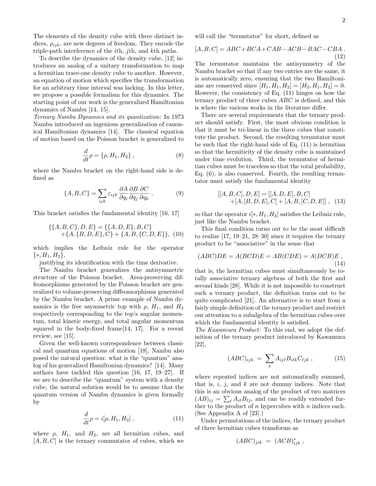
<figcaption class="paper-figure-caption"><b>Fig 1.</b> Low-resolution page preview, page 2</figcaption>
</figure>
<figure class="paper-figure-card">
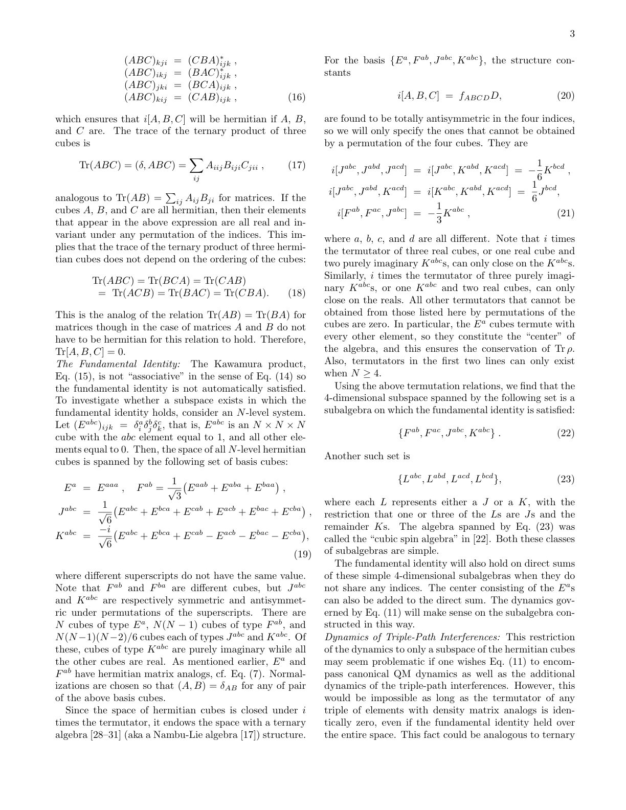
<figcaption class="paper-figure-caption"><b>Fig 2.</b> Low-resolution page preview, page 3</figcaption>
</figure>
<figure class="paper-figure-card">
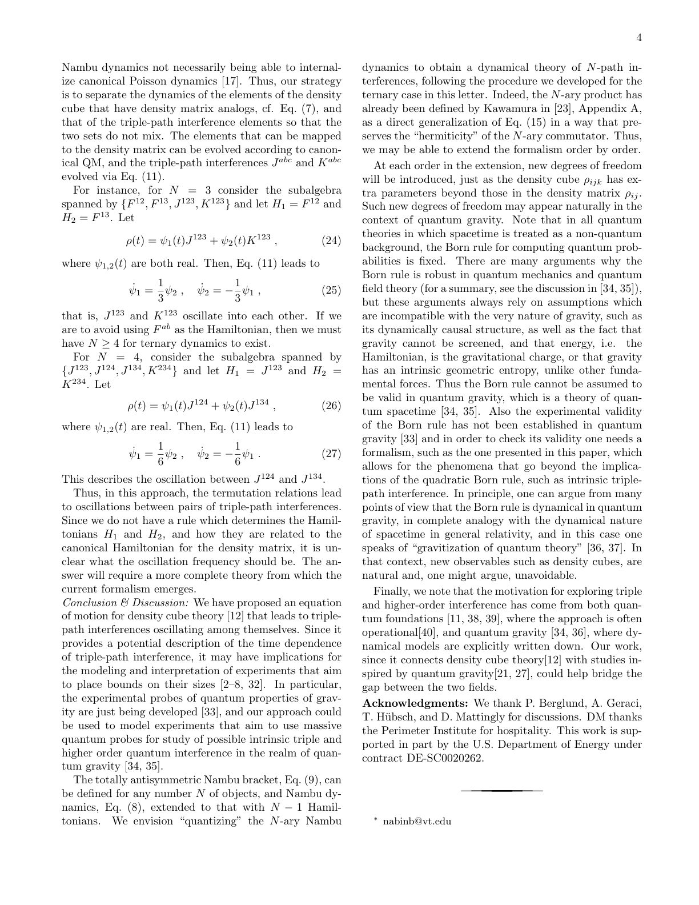
<figcaption class="paper-figure-caption"><b>Fig 3.</b> Low-resolution page preview, page 4</figcaption>
</figure>
<figure class="paper-figure-card">
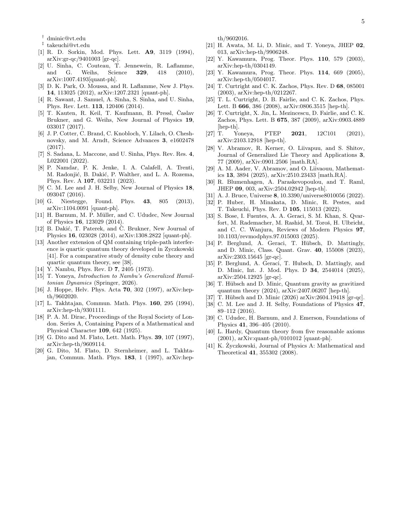
<figcaption class="paper-figure-caption"><b>Fig 4.</b> Low-resolution page preview, page 5</figcaption>
</figure>
</div>

<p><strong>Summary.</strong> This theoretical paper introduces 'Density Cube Theory' to model quantum dynamics beyond standard pairwise interference by using a three-index density cube. The authors derive the evolution equation from quantizing ternary Nambu dynamics, predicting that triple-path interference terms exhibit oscillatory behavior. This work suggests a new framework for understanding higher-order quantum correlations.</p>
<p><strong>Why it may be interesting.</strong> This work proposes a fundamental extension to quantum dynamics that models higher-order interference effects, which is highly relevant for theoretical investigations into quantum gravity or non-standard quantum foundations.</p>
<details>
<summary>Detailed structure</summary>
<p><strong>Main problem.</strong> The paper aims to extend standard quantum mechanics formalism beyond pairwise path interference to incorporate and describe triple-path interference.</p>
<p><strong>Main result.</strong> The authors derive an equation of motion for the density cube based on quantizing ternary Nambu dynamics, finding that pairs of triple-path interferences oscillate into each other.</p>
<p><strong>Method.</strong> The formalism involves extending the density matrix to a three-index 'density cube' ($
ho_{ijk}$) and deriving its dynamics using a quantum analog of the Nambu bracket.</p>
<p><strong>Model / system.</strong> The model is the 'Density Cube Theory,' which describes quantum states using a three-index tensor ($
ho_{ijk}$). The dynamics are governed by a structure derived from ternary Nambu dynamics, requiring the use of a specific 'Kawamura Product' to maintain algebraic consistency.</p>
<p><strong>Key observables.</strong> Triple-path interference elements ($
ho_{ijk}$ with distinct indices) and the conservation of the trace ($   ext{Tr}
ho = 1$).</p>
<p><strong>Important parameters / regimes.</strong> The system is analyzed for $N$-level systems, with specific calculations shown for $N=3$ and $N=4$.</p>
<p><strong>Assumptions / limitations.</strong> The dynamics are assumed to follow the form $d
ho/dt = i[
ho, H_1, H_2]$, and the authors adopt the Kawamura Product to bypass full associativity requirements.</p>
<p><strong>Figures summary.</strong> Not specified (The notes only mention equations and structural results, not figure content).</p>
<p><strong>Paper structure.</strong> The paper introduces the density cube formalism, derives the equation of motion from quantized ternary Nambu dynamics, calculates the structure constants for the resulting ternary algebra, and finally demonstrates the oscillatory behavior of the triple-path interference terms.</p>
</details>
<details>
<summary>Abstract</summary>
<p>Density cube theory extends the canonical quantum density matrix $ρ_{ij}$ with the addition of an extra index to $ρ_{ijk}$. The elements of the density cube with two different indices, $ρ_{iij}$ and $ρ_{ijj}$, correspond to the real and imaginary parts of the off-diagonal element $ρ_{ij}$ of the density matrix and describe double-path interference, while those with three different indices describe non-canonical triple-path interference. In this letter, we propose an equation of motion for the density cube, obtained from the quantization of ternary Nambu dynamics, and find that pairs of triple-path interferences oscillate into each other.</p>
</details>
<p><sub><a href="#top">↑ back to top</a></sub></p>

<p><a id="paper-2606.01786"></a></p>
<h3 id="evolution-of-the-intertwining-correlated-topological-phases-in-iron-based-superconductor-fetese"><a href="http://arxiv.org/abs/2606.01786v1">Evolution of the intertwining correlated topological phases in iron-based superconductor Fe(Te,Se)</a></h3>
<p><strong>Authors:</strong> Yue Sun, Shiying He, Zhongyi Zhang, Yong Huang, Jingheng Chen, Weixiang Yan, Chunbo Yu, Yuyang Dong, Kohei Aido, Xin Zhou, Zhengtai Liu, Mao Ye, Jishan Liu, Haruhisa Kitano, Zhixiang Shi, Hong Ding, Takeshi Kondo, Xianxin Wu, Peng Zhang<br>
<strong>Type:</strong> experiment · <strong>Category:</strong> strongly correlated electrons · <strong>PDF:</strong> <a href="https://arxiv.org/pdf/2606.01786v1">https://arxiv.org/pdf/2606.01786v1</a><br>
<strong>Analysis basis:</strong> full PDF text, analyzed in chunks
<strong>Topic relevance:</strong> <code>analog quantum simulation</code> <strong>1/5</strong></p>
<div class="figure-strip-hint">↔ Scroll figures horizontally</div>
<div class="paper-figures-scroll">
<figure class="paper-figure-card">
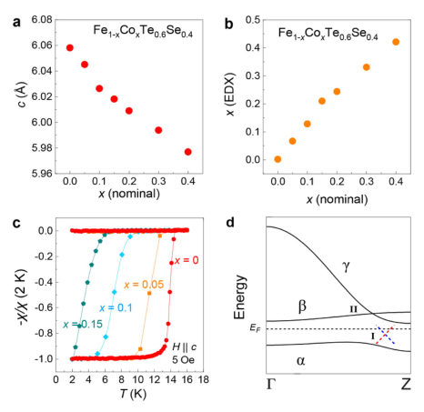
<figcaption class="paper-figure-caption"><b>Fig 1.</b> Fig. 1. Structure, composition and Tc of Co-doped FeTe0.6Se0.4. a, Lattice constant c for Fe1−xCoxTe0.6Se0.4 (0 ≤x ≤0.4) obtained from the X-ray diffraction measure- ments. b, EDX results for the actual Co concentrations. c, Temperature dependence of the reduced magnetic susceptibil- ities -χ/χ(2 K) under 5 Oe for Fe1−xCoxTe0.6Se0.4 (0 ≤x ≤ 0.15). d, Sketch of band dispersion along kz direction. There are two band inversions (Band inversion I and II). α/β band consists of dxz/yz orbital, while γ band mainly consists of pz orbital. In undoped Fe(Te,Se), Fermi level is located roughly at the dashed line, in the SOC gap of the band inversion I.</figcaption>
</figure>
<figure class="paper-figure-card">
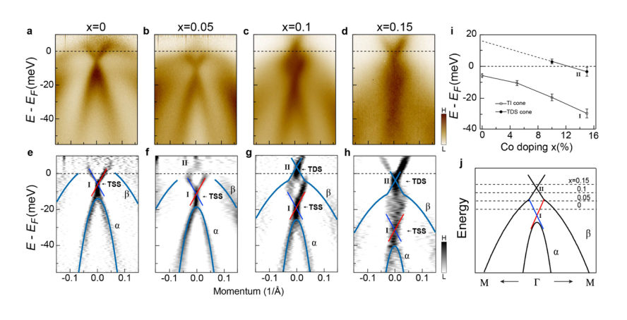
<figcaption class="paper-figure-caption"><b>Fig 2.</b> Fig. 2. Evolution of the TI and TDS Dirac bands with Co doping. a-d, Band structure of Fe1−xCoxTe0.6Se0.4 (x = 0, 0.05, 0.1, 0.15) near Γ at 30 K, with a laser delivering p-polarized 7-eV photons. e-h, Curvature intensity plots of a-d. i, Shift of the TI (I) and TDS (II) Dirac points with Co doping. Extraction method of the Dirac point positions can be found in Supplementary Information, Section S2. j, Sketch of the in-plane band structure along ΓM. The Dirac band (I) with red and blue lines is the TI Dirac band. The Dirac band (II) on top is the TDS band. The dashed lines represent the corresponding Fermi level at different Co doping.</figcaption>
</figure>
<figure class="paper-figure-card">
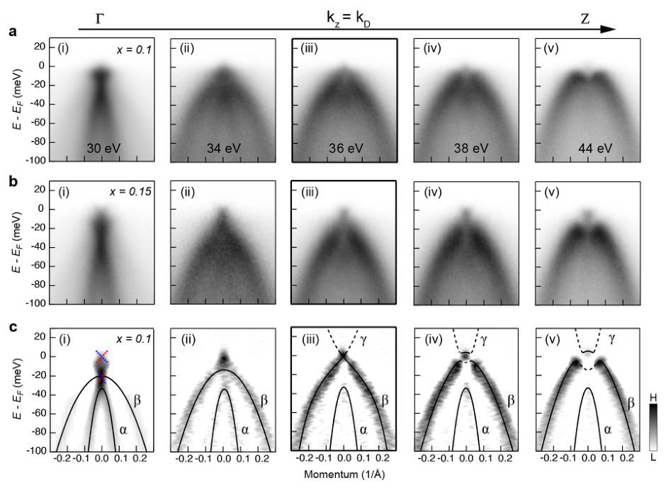
<figcaption class="paper-figure-caption"><b>Fig 3.</b> Fig. 3. Photon-energy dependence of band structure in Fe1−xCoxTe0.6Se0.4 (x = 0.1 and 0.15) at 30K. a, ARPES spectra of x = 0.1 sample at different photon energies from 30 eV to 44 eV. b, The same as a but with x = 0.15 sample. c, EDC curvature plot of a. The bulk Dirac point is determined to be at around 36 eV. The black lines indicate the bulk bands. The blue and red dashed lines in c(i) indicated the TI surface band and TDS surface components, which are unclear at higher photon energies.</figcaption>
</figure>
<figure class="paper-figure-card">
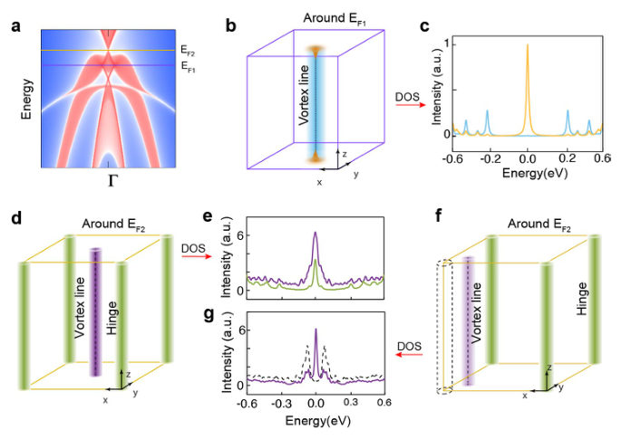
<figcaption class="paper-figure-caption"><b>Fig 4.</b> Fig. 4. Possible Majorana modes in electron-doped Fe(Te,Se). a, Schematic surface spectrum of the (001) surface in the normal state. b, Hybrid vortex phase around EF1 with conventional s-wave pairing, exhibiting both Majorana zero mode (yellow) at the end of vortex and 1D Majorana mode (cyan) along the vortex. c, Calculated local density of states of the two Majorana modes in b. d, e, Majorana mode in the vortex (purple) and Majorana mode at the hinge (green) with B1u/2u pairing around EF2. d shows the distribution of the two Majorana modes in real space, and e shows their calculated local density of states. f, When the Majorana mode in the vortex is close to a hinge, the two Majorana modes...</figcaption>
</figure>
</div>

<p><strong>Summary.</strong> This work uses ARPES on Co-doped iron-based superconductors to study how multiple topological electronic states coexist and interact under electron doping. The key finding is the direct observation of two distinct topological bands intersecting at the Fermi level, which establishes the material as an excellent platform for exploring complex Majorana mode physics in correlated superconductors.</p>
<p><strong>Why it may be interesting.</strong> The explicit focus on correlated topological superconductivity and the detailed mapping of multiple interacting topological states (TI/TDS) provides a rich playground for understanding emergent quantum phenomena beyond simple BCS theory.</p>
<details>
<summary>Detailed structure</summary>
<p><strong>Main problem.</strong> The study investigates the complex interplay between multiple coexisting topological superconducting states and strong correlation effects within iron-based superconductors.</p>
<p><strong>Main result.</strong> The authors directly resolved two distinct intertwining topological states (TI surface and TDS bulk) in Co-doped Fe(Te,Se), showing that their intersection at the Fermi level enables the existence of multiple Majorana modes.</p>
<p><strong>Method.</strong> The research employed high-resolution Angle-Resolved Photoelectron Spectroscopy (ARPES) to map the band structure evolution, supplemented by X-ray diffraction and magnetic susceptibility measurements.</p>
<p><strong>Model / system.</strong> The physical system is the iron-based superconductor $  ext{Fe}(    ext{Te},    ext{Se})$, specifically $   ext{Co}$-doped $    ext{Fe}(    ext{Te},    ext{Se})$, which serves as an ideal platform to study correlated topological superconductivity.</p>
<p><strong>Key observables.</strong> Band dispersion, Dirac point positions (TI and TDS), superconducting transition temperature ($T_c$) dependence on doping, and the presence/evolution of Majorana zero modes.</p>
<p><strong>Important parameters / regimes.</strong> Electron doping level ($x$ via Co substitution), Fermi level position ($E_F$), and the energy separation between the two topological bands ($\approx 20 	ext{ meV}$).</p>
<p><strong>Assumptions / limitations.</strong> The topological states observed are significantly affected by the strong correlation effect, and the $   ext{Co}$ substitution successfully tunes the system to isolate the relevant topological physics.</p>
<p><strong>Figures summary.</strong> Figures show the evolution of TI and TDS Dirac bands with Co doping, confirming their relative positions and the shift of Dirac points. Other figures illustrate the $k_z$ dispersion and schematic representations of hybrid Majorana vortex phases.</p>
<p><strong>Paper structure.</strong> The paper progresses by first characterizing the material structure and doping dependence (Fig. 1), then using ARPES to map the coexisting topological bands (Fig. 2), and finally analyzing the implications for Majorana modes by tracking band evolution and theoretical modeling (Fig. 3, 4).</p>
</details>
<details>
<summary>Abstract</summary>
<p>Multiple topological electronic phases can coexist within a single quantum material and induce different topological superconducting states, offering deeper insights into interplay of topological superconducting states and Majorana modes, which may also be influenced and modified by correlation effect. Iron-based superconductors, with both topological states and correlation effect, is an ideal platform to study these phenomena. Here, with high resolution angle resolved photoelectron spectroscopy, we directly resolve two distinct intertwining topological states in iron-based superconductor Co-doped Fe(Te,Se), and study their evolution with electron doping. We identify a region where both topological insulator surface states and topological Dirac semimetal states intersect the Fermi level. The topological states are affected by the strong correlation effect and are isolated from trivial bulk states. The evolution between distinct topological phases offers a good opportunity to study various Majorana modes from different superconducting phases according to theoretical analysis. Our findings establish an ideal platform for exploring the interaction between multiple topological superconducting states and the related Majorana modes.</p>
</details>
<p><sub><a href="#top">↑ back to top</a></sub></p>

<p><a id="paper-2606.01785"></a></p>
<h3 id="excitonic-superconducting-coexistence-and-emergent-nematic-superconductivity-driven-by-spontaneous-symmetry-breaking"><a href="http://arxiv.org/abs/2606.01785v1">Excitonic-Superconducting Coexistence and Emergent Nematic Superconductivity Driven by Spontaneous Symmetry Breaking</a></h3>
<p><strong>Authors:</strong> Fei Yang, Ruigang Li, Junwei Liu, Binghai Yan<br>
<strong>Type:</strong> theory · <strong>Category:</strong> strongly correlated electrons · <strong>PDF:</strong> <a href="https://arxiv.org/pdf/2606.01785v1">https://arxiv.org/pdf/2606.01785v1</a><br>
<strong>Analysis basis:</strong> full PDF text, analyzed in chunks
<strong>Topic relevance:</strong> <code>Keldysh / 2PI / non-Gaussian methods</code> <strong>1/5</strong></p>
<div class="figure-strip-hint">↔ Scroll figures horizontally</div>
<div class="paper-figures-scroll">
<figure class="paper-figure-card">
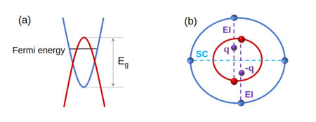
<figcaption class="paper-figure-caption"><b>Fig 1.</b> FIG. 1. (a) Bare band structure showing the conduction and valence bands with a negative band gap 𝐸𝑔. (b) Schematic illustration of SC and EI pairing on mismatched Fermi surfaces. The purple dashed lines denote interband electron-hole EI pairings. Due to the electron- hole Fermi-surface mismatch, the EI pairing spontaneously acquires finite CM momenta ±q, forming an LO-like excitonic state composed of two time-reversal-related pairing components. Here, q is chosen along the 𝑦direction, reflecting the spontaneous rotational-symmetry breaking of the underlying isotropic model. As a result, conduction- band states with momenta perpendicular to ±q do not participate in EI pairing, leaving parts...</figcaption>
</figure>
<figure class="paper-figure-card">
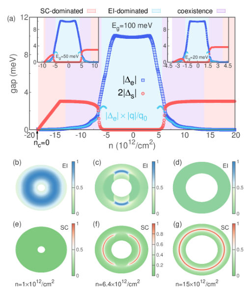
<figcaption class="paper-figure-caption"><b>Fig 2.</b> FIG. 2. (a) Carrier-density dependence of the EI gap, SC gap, and ordering wave vector magnitude 𝑞for 𝐸𝑔= 100 meV. Here, 𝑛= 𝑛𝑐−𝑛𝑣denotes the net carrier density and 𝑞0 = |𝑘𝐹,𝑣−𝑘𝐹,𝑐|. Inset: corresponding results for 𝐸𝑔= 50 meV and 20 meV. (b)- (d) and (e)-(g) show the momentum-resolved EI and SC correlations for conduction-band electrons within a momentum shell around the Fermi surface, respectively, at three representative electron-doped carrier densities corresponding to the EI-dominated, coexistence, and SC-dominated regimes when 𝐸𝑔= 100 meV.</figcaption>
</figure>
<figure class="paper-figure-card">
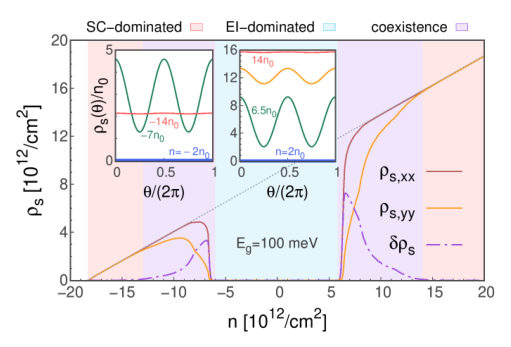
<figcaption class="paper-figure-caption"><b>Fig 3.</b> FIG. 3. Superfluid-density tensor components 𝜌𝑠,𝑥𝑥and 𝜌𝑠,𝑦𝑦, and the nematic component 𝛿𝜌𝑠= 𝜌𝑠,𝑥𝑥−𝜌𝑠,𝑦𝑦, versus net carrier density 𝑛= 𝑛𝑐−𝑛𝑣. Insets show the angular dependence of 𝜌𝑠(𝜃) in the EI- dominated, coexistence, and SC-dominated regimes on both the hole- and electron-doped sides. Here, 𝑛0 = 1012 cm−2. The dashed line denotes the conduction-band density 𝑛𝑐, where superconductivity resides; thus, in the SC-dominated regime (|𝑛| &gt; 14𝑛0), 𝜌𝑠,𝑥𝑥≈ 𝜌𝑠,𝑦𝑦≈𝑛𝑐. The phase regimes are determined from Fig. 2(a).</figcaption>
</figure>
</div>

<p><strong>Summary.</strong> This theoretical work demonstrates that the competition between excitonic and superconducting orders can lead to a novel coexistence regime driven by Fermi surface mismatch. This coexistence forces the superconducting state to inherit an anisotropic structure, resulting in intrinsic nematic superconductivity even without external symmetry-breaking fields. The findings suggest a general mechanism for generating electronic nematicity in correlated quantum materials.</p>
<p><strong>Why it may be interesting.</strong> The mechanism of generating intrinsic nematicity purely from the competition between two competing many-body orders (EI and SC) is a general concept applicable to understanding anisotropic electronic states in correlated materials, which is highly relevant to modern condensed matter theory.</p>
<details>
<summary>Detailed structure</summary>
<p><strong>Main problem.</strong> The paper investigates the competition and coexistence between Excitonic Insulating (EI) and Superconducting (SC) orders, which are generally considered mutually exclusive instabilities.</p>
<p><strong>Main result.</strong> The intrinsic mismatch between electron and hole Fermi surfaces stabilizes a finite-momentum excitonic order, which reconstructs the pairing phase space to allow for the coexistence of EI and SC states, leading to emergent nematic superconductivity.</p>
<p><strong>Method.</strong> The study employs a self-consistent mean-field theory, solving coupled gap equations for both SC and EI order parameters.</p>
<p><strong>Model / system.</strong> The model considers correlated quantum materials, using a two-band Hamiltonian approach that incorporates both superconducting pairing and interband Coulomb interactions driving the excitonic instability.</p>
<p><strong>Key observables.</strong> Superfluid density tensor components ($
ho_{s,xx}, 
ho_{s,yy}$), EI gap ($\Delta_{EI}$), SC gap ($\Delta_{SC}$), and the excitonic ordering wave vector ($\mathbf{q}$).</p>
<p><strong>Important parameters / regimes.</strong> Carrier density ($n$), temperature ($T$), and the degree of Fermi surface mismatch.</p>
<p><strong>Assumptions / limitations.</strong> The analysis relies on mean-field approximations and often assumes an isotropic parabolic band structure for initial simplicity, though extensions consider intervalley effects.</p>
<p><strong>Figures summary.</strong> Figures illustrate the schematic pairing on mismatched Fermi surfaces, the momentum-resolved SC correlation, and the superfluid density tensor components showing anisotropy ($
ho_{s,xx} &gt; 
ho_{s,yy}$) in the coexistence regime.</p>
<p><strong>Paper structure.</strong> The paper progresses by establishing the theoretical framework (Hamiltonian, gap equations), analyzing the role of Fermi surface mismatch in stabilizing finite-momentum excitonic order, demonstrating the resulting phase space reconstruction, and finally calculating the anisotropic superfluid response as the signature of nematic coexistence.</p>
</details>
<details>
<summary>Abstract</summary>
<p>Excitonic insulating (EI) and superconducting (SC) orders are generally regarded as mutually exclusive electronic instabilities. Within a self-consistent microscopic theory, we study electronic systems hosting an EI phase in the presence of SC pairing and show that an intrinsic mismatch between electron and hole Fermi surfaces fundamentally reshapes this competition. This mismatch stabilizes FFLO-like electron-hole pairing and drives spontaneous symmetry breaking of the EI state. The resulting symmetry breaking reconstructs the pairing phase space for SC and EI state, such that different regions of the Fermi surface complementarily support either EI or SC correlations, leading to a natural coexistence of the two orders. Notably, the emergent SC state consequently breaks rotational symmetry and develops intrinsic nematic superconductivity, even in the absence of explicit symmetry-breaking fields (such as magnetic fields, spin-orbit coupling, or bare band-structure anisotropy). Our results suggest that candidate materials such as monolayer 1T$'$-MoTe$_2$ and the square-net semimetal NaAlSi may provide promising platforms for observing this phenomenon. More broadly, these findings reveal a unique mechanism by which competing many-body orders generate electronic nematicity, suggesting a broader route toward spontaneous anisotropic electronic states in correlated quantum materials.</p>
</details>
<p><sub><a href="#top">↑ back to top</a></sub></p>

<p><a id="paper-2606.00222"></a></p>
<h3 id="how-to-make-quantum-cheese-efficient-geometry-oracles-for-exponentially-many-pseudorandom-microstructures"><a href="http://arxiv.org/abs/2606.00222v1">How to make quantum cheese: efficient geometry oracles for exponentially many pseudorandom microstructures</a></h3>
<p><strong>Authors:</strong> Alice Barthe<br>
<strong>Type:</strong> theory · <strong>Category:</strong> quantum information and computing · <strong>PDF:</strong> <a href="https://arxiv.org/pdf/2606.00222v1">https://arxiv.org/pdf/2606.00222v1</a><br>
<strong>Analysis basis:</strong> full PDF text, analyzed in chunks
<strong>Topic relevance:</strong> <code>analog quantum simulation</code> <strong>1/5</strong></p>
<div class="figure-strip-hint">↔ Scroll figures horizontally</div>
<div class="paper-figures-scroll">
<figure class="paper-figure-card">
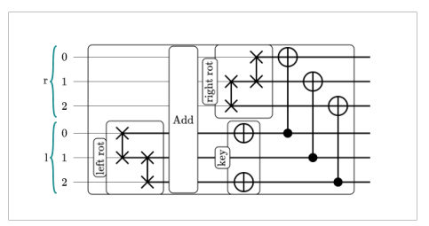
<figcaption class="paper-figure-caption"><b>Fig 1.</b> Figure 1: Quantum circuit for a single round of SPECK cipher [4] for n = 6 bits, with key k = 5, and rotation parameters u = 1 and v = 1.</figcaption>
</figure>
<figure class="paper-figure-card">
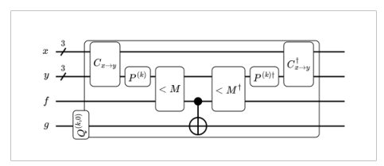
<figcaption class="paper-figure-caption"><b>Fig 2.</b> Figure 2: Quantum circuit flagging M random centres. x is the input register, copied into the register y. The pseudorandom permutation P (k) made of multiple rounds of Figure 1 is applied to y. The result is compared to M using a comparator &lt; M raising flag f. The result is stored in g, and uncomputation is performed to leave y and f clean.</figcaption>
</figure>
<figure class="paper-figure-card">
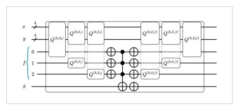
<figcaption class="paper-figure-caption"><b>Fig 3.</b> Figure 4: Quantum circuit for the fixed-shape hole oracle, for a set ∆of T = 3 offsets δt. Each Q(k,δt) retrieves whether the site shifted by δt is a centre in a flag qubit ft using the circuit in Figure 2 . Then the result of W</figcaption>
</figure>
<figure class="paper-figure-card">
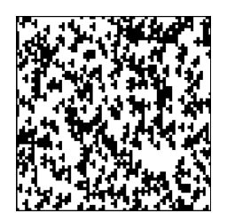
<figcaption class="paper-figure-caption"><b>Fig 4.</b> Figure 5: A realisation of quantum cheese: For a quan- tum oracle solving Problem 1 for a material where holes of fixed shape have been hollowed out, result of simu- lating the oracle by querying all coordinates (x, y) on a 26 ×26 = 64×64 grid. We select M = 512 holes shaped as in Figure 3, with rotations parameters (u, v) = (1, 7) and m = 5 rounds with key k = [38, 51, 28, 14, 42].</figcaption>
</figure>
<figure class="paper-figure-card">
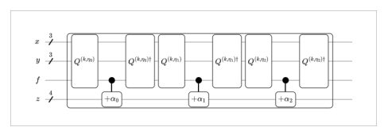
<figcaption class="paper-figure-caption"><b>Fig 5.</b> Figure 6: Quantum circuit to apply a convolution with the kernel Λ = {(ηr, αr)}1≤r≤R (here R = 3) to the binary field given by Q(k,0), that is the permutation oracle shifted by 0, as in Figure 2. For each shift ηr, the flag f is raised or not. If it is raised, the controlled operation on f adds αr to the accumulator register z. The result of the convolution is stored in z, that can be further thresholded with a comparator to yield a geometry oracle.</figcaption>
</figure>
</div>

<p><strong>Summary.</strong> This paper develops a theory for efficiently encoding the geometry of complex, structured materials into quantum oracles. It proves that while arbitrary material patterns are computationally hard to query, patterns generated by local, pseudorandom rules can be efficiently simulated using polynomial-size quantum circuits. This bridges quantum computation theory with condensed matter physics modeling.</p>
<p><strong>Why it may be interesting.</strong> The work provides a rigorous quantum computational framework for simulating complex, disordered materials, moving beyond simple Hamiltonian simulation by addressing the computational cost of defining the system's geometry itself.</p>
<details>
<summary>Detailed structure</summary>
<p><strong>Main problem.</strong> The paper investigates the fundamental question of when quantum oracles for materials defined by generative rules (rather than exhaustive lists) can be implemented efficiently by polynomial-size quantum circuits.</p>
<p><strong>Main result.</strong> It shows that while arbitrary geometries lead to intractable oracles, imposing local structure, such as those derived from pseudorandom generation or convolution, allows for the construction of efficient, polynomial-size quantum oracles.</p>
<p><strong>Method.</strong> The authors use complexity theory arguments, establishing lower bounds via reductions to unstructured search problems, and then provide explicit circuit constructions based on pseudorandom permutations and local convolution operations.</p>
<p><strong>Model / system.</strong> The model involves textured materials (e.g., porous media, foams) whose geometry is determined by local rules acting on an exponentially large grid ($N=2^n$). The complexity is analyzed by constructing oracles for membership testing in these structured geometries.</p>
<p><strong>Key observables.</strong> The primary observable is the quantum query complexity required to evaluate the geometry oracle, compared against the circuit size (gate count) required for implementation.</p>
<p><strong>Important parameters / regimes.</strong> The key parameters include the grid size $N=2^n$, the number of holes $M$, and the structure of the local kernel $\Lambda$ used in the convolution.</p>
<p><strong>Assumptions / limitations.</strong> The efficiency relies critically on the geometry possessing sufficient local structure (e.g., being generated by a pseudorandom process or a fixed kernel convolution).</p>
<p><strong>Figures summary.</strong> Figures illustrate the quantum circuits for random-centre oracles and convolution oracles, and show examples of complex, physically relevant textures (like reaction-diffusion patterns) generated using these structured methods.</p>
<p><strong>Paper structure.</strong> The paper progresses from establishing the general intractability of unstructured geometry oracles to introducing structured methods. It details the random-centre oracle, generalizes this via convolution and thresholding to model complex microstructures, and concludes with cost analyses and connections to quantum sampling hardness.</p>
</details>
<details>
<summary>Abstract</summary>
<p>Quantum algorithms for simulating linear systems are often formulated under oracle access assumptions. A central question is when such oracles can be implemented by polynomial-size quantum circuits. In this paper, we study this question for materials specified by rules rather than by exhaustive descriptions. We focus on textured materials with exponentially many geometric features. In two settings, we show that, without additional structure, describing such geometries yields Grover-type lower bounds, making the corresponding quantum oracles intractable in general. In contrast, when suitable structure is imposed, we identify a broad family of pseudorandom locally textured materials whose geometry can be queried through a polynomial-size quantum circuit. We provide explicit circuit constructions for these oracles and verify their behaviour through numerical simulation.</p>
</details>
<p><sub><a href="#top">↑ back to top</a></sub></p>

<p><a id="paper-2606.02014"></a></p>
<h3 id="lie-algebra-based-quantum-optimal-controls-interpolation"><a href="http://arxiv.org/abs/2606.02014v1">Lie Algebra-Based Quantum Optimal Controls Interpolation</a></h3>
<p><strong>Authors:</strong> Piero Luchi, Francesco Pederiva<br>
<strong>Type:</strong> theory · <strong>Category:</strong> quantum information and computing · <strong>PDF:</strong> <a href="https://arxiv.org/pdf/2606.02014v1">https://arxiv.org/pdf/2606.02014v1</a><br>
<strong>Analysis basis:</strong> full PDF text, analyzed in chunks
<strong>Topic relevance:</strong> <code>methods for driven-dissipative</code> <strong>1/5</strong></p>
<div class="figure-strip-hint">↔ Scroll figures horizontally</div>
<div class="paper-figures-scroll">
<figure class="paper-figure-card">
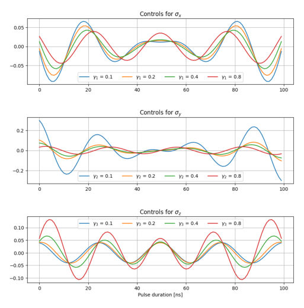
<figcaption class="paper-figure-caption"><b>Fig 1.</b> FIG. 1: Example of controls ϵ1(t) for different values of the parameters γ1, γ2, γ3 in the generator of SU(2), as shown in the text. Small changes in the parameters lead to small changes in the controls, which is a consequence of the smooth manifold structure of SU(2). In this work this feature is crucial to interpolate between controls.</figcaption>
</figure>
<figure class="paper-figure-card">
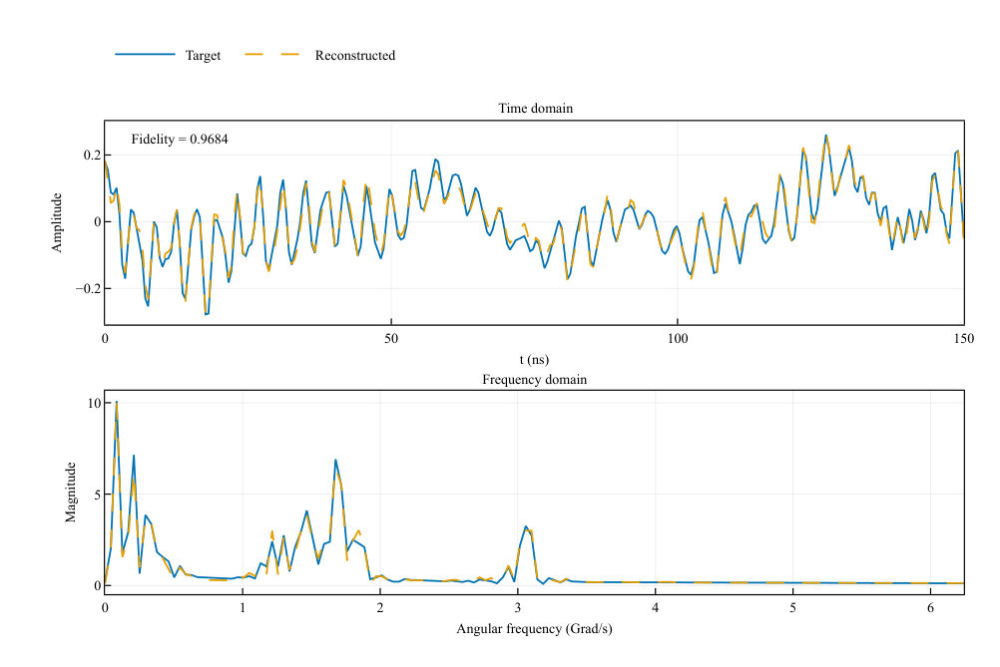
<figcaption class="paper-figure-caption"><b>Fig 2.</b> FIG. 2: Representative example of the control field Ωx(t) reconstructed by the LA-CPR method for a 3-qubit system with z = π/4. Upper panel: time-domain profile of the exact (target) control and its LA-CPR reconstruction; the inset reports the corresponding fidelity. Lower panel: frequency spectra of both signals. The peak at ∼0.03 GHz reflects the qubit–qubit interaction frequencies (see Tab. III); peaks above 1 GHz correspond to individual qubit transition frequencies; the feature near 3 GHz is a second-order harmonic artifact introduced by the optimizer due to the finite temporal discretization of the pulse.</figcaption>
</figure>
<figure class="paper-figure-card">
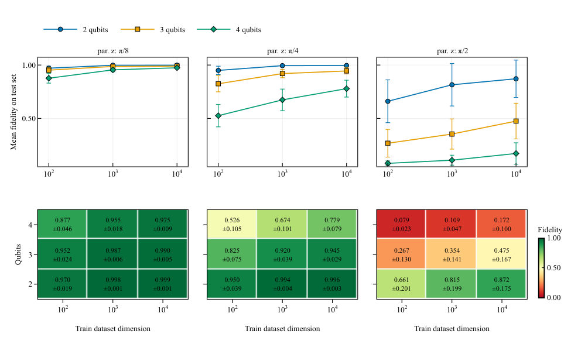
<figcaption class="paper-figure-caption"><b>Fig 3.</b> FIG. 3: Average fidelity of the LA-CPR method as a function of the training dataset size, for z = π/8 (left), z = π/4 (center), and z = π/2 (right). Upper row: mean fidelity on the test set versus training dataset dimension, with curves for Nq = 2, 3, 4 qubits; error bars indicate one standard deviation across independent training runs. Lower row: heatmaps of the same data, where each cell reports the mean fidelity ± one standard deviation as a function of the training dataset dimension (102, 103, 104) and the number of qubits (Nq = 2, 3, 4); the color scale spans fidelities from 0 to 1 and provides a direct visualization of the joint dependence on dataset size and system dimension. In all...</figcaption>
</figure>
<figure class="paper-figure-card">
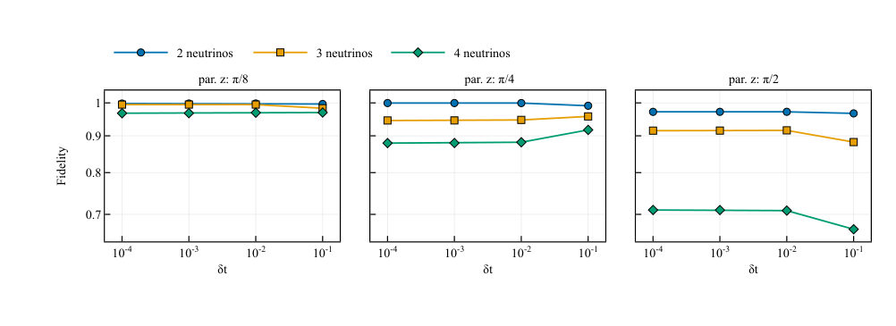
<figcaption class="paper-figure-caption"><b>Fig 4.</b> FIG. 4: Reconstruction fidelity of the LA-CPR method for the neutrino Trotter propagator Uneutr = e−i δt Hneutr, shown as a function of the time step δt and the number of neutrinos Nn, for z = π/8 (left), z = π/4 (center), and z = π/2 (right). All models are trained on a dataset of 20 000 elements. The fidelity decreases systematically with both δt and z: larger time steps displace the target propagators away from the group identity, while larger values of z broaden the training distribution, both increasing the difficulty of the reconstruction task.</figcaption>
</figure>
<figure class="paper-figure-card">
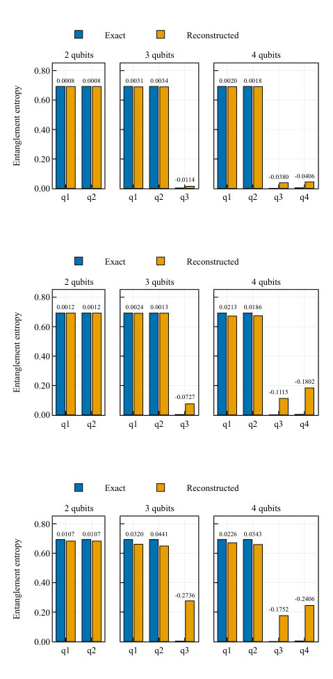
<figcaption class="paper-figure-caption"><b>Fig 5.</b> FIG. 5: Single-qubit von Neumann entropy Sk of the output state |ψ⟩= U |ψ0⟩for the exact (solid) and reconstructed (dashed) neutrino propagators, shown for Nn = 2, 3, 4 neutrinos and z = π/8 (top), z = π/4 (middle), and z = π/2 (bottom). The number over the bars represent the differences between them. The exact and reconstructed entropy profiles are in close agreement for small z, while the discrepancy grows with increasing z, mirroring the trend observed in the gate fidelity and confirming that reconstruction accuracy degrades as the training distribution broadens.</figcaption>
</figure>
</div>

<p><strong>Summary.</strong> This paper introduces a novel, scalable method called LA-CPR to generate quantum optimal control pulses for arbitrary unitary operations in superconducting qubits. By mapping the unitary structure onto a Lie algebra and training neural networks, it bypasses the need for computationally expensive optimization at runtime. This allows for the rapid design of control sequences for complex quantum simulations, such as those modeling neutrino oscillations.</p>
<p><strong>Why it may be interesting.</strong> This work provides a powerful, scalable tool for quantum control, moving beyond iterative optimization methods by leveraging deep learning on the underlying mathematical structure of quantum evolution, which is highly relevant for designing complex quantum circuits.</p>
<details>
<summary>Detailed structure</summary>
<p><strong>Main problem.</strong> The paper addresses the computational bottleneck in quantum optimal control by developing a method to generate control pulses for arbitrary unitary operations without requiring explicit, time-consuming optimization at inference time.</p>
<p><strong>Main result.</strong> The proposed Lie Algebra-based Control Pulse Reconstruction (LA-CPR) framework successfully trains neural networks to map target unitaries to their required control pulses, achieving high reconstruction fidelity for systems up to 4 qubits.</p>
<p><strong>Method.</strong> It combines Lie group theory to parameterize the space of target unitaries ($SU(N)$) with feed-forward neural networks trained on a dataset of pre-optimized control pulses to enable fast, non-iterative pulse generation.</p>
<p><strong>Model / system.</strong> The study focuses on controlling superconducting qubit systems, modeling the dynamics using Hamiltonians involving drift, interaction, and time-dependent control terms. The underlying mathematical structure is the Lie group $SU(N)$ acting on the $N$-dimensional Hilbert space.</p>
<p><strong>Key observables.</strong> Reconstruction Fidelity ($F$), Single-qubit von Neumann Entropy ($S_k$), and the control envelopes ($\Omega_x(t), \Omega_y(t)$).</p>
<p><strong>Important parameters / regimes.</strong> Number of qubits ($N_q=2, 3, 4$), sampling radius ($z$), and time step ($\delta t$).</p>
<p><strong>Assumptions / limitations.</strong> The method assumes that the target unitaries can be effectively sampled from a neighborhood of the identity element within the Lie group, and that the required controls can be approximated by a mapping learned from this sampled data.</p>
<p><strong>Figures summary.</strong> Figures illustrate the reconstruction fidelity vs. dataset size and sampling radius, and show the reconstructed control field profiles for various qubit numbers and physical applications like neutrino oscillations.</p>
<p><strong>Paper structure.</strong> The paper first establishes the physical problem (QOC bottleneck), then details the mathematical framework using Lie algebra theory to parameterize the unitary space. It introduces the LA-CPR method involving dataset sampling, NN training, and finally demonstrates its application to complex systems like neutrino flavor oscillations.</p>
</details>
<details>
<summary>Abstract</summary>
<p>We present a framework combining Lie group theory and feed-forward neural networks to efficiently generate quantum optimal control pulses for arbitrary unitary operations in superconducting qubit systems, bypassing the need for explicit optimization at inference time. The exponential scaling of the Hilbert space dimension with qubit number makes standard optimization approaches computationally prohibitive when large ensembles of distinct propagators must be processed, a bottleneck that is particularly acute in Trotterized quantum simulation. Our method addresses this limitation by pre-computing a representative set of control pulses via Lie group theory and training neural networks to map target propagators to their corresponding pulses. We demonstrate the approach on superconducting qubit systems of 2, 3, and 4 qubits, finding high reconstruction fidelity for specific combinations of Lie algebra parameters. As a physically motivated benchmark, we apply the methodology to reconstruct control pulses for the Trotter propagators of a neutrino system undergoing collective flavor oscillations. The successful generalization across system types demonstrates that a single model -- trained once on hardware-specific random propagators -- can serve as a universal control-pulse generator for any target quantum system of compatible Hilbert space dimension, offering a promising route toward scalable quantum simulation.</p>
</details>
<p><sub><a href="#top">↑ back to top</a></sub></p>

<p><a id="paper-2606.02524"></a></p>
<h3 id="practical-limits-on-integrated-squeezers"><a href="http://arxiv.org/abs/2606.02524v1">Practical Limits on Integrated Squeezers</a></h3>
<p><strong>Authors:</strong> Devin J. Dean, Taewon Park, Lars S. Madsen, Alex Terrasson, Sam Robison, Geun Ho Ahn, Ziyu Wang, Hubert S. Stokowski, Luke Qi, Jesse J. Slim, Joel Corney, Darwin Serkland, Warwick P. Bowen, Martin M. Fejer, Amir H. Safavi-Naeini<br>
<strong>Type:</strong> theory · <strong>Category:</strong> other · <strong>PDF:</strong> <a href="https://arxiv.org/pdf/2606.02524v1">https://arxiv.org/pdf/2606.02524v1</a><br>
<strong>Analysis basis:</strong> full PDF text, analyzed in chunks
<strong>Topic relevance:</strong> <code>methods for driven-dissipative</code> <strong>1/5</strong></p>
<div class="figure-strip-hint">↔ Scroll figures horizontally</div>
<div class="paper-figures-scroll">
<figure class="paper-figure-card">
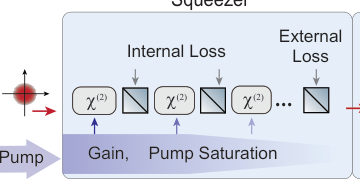
<figcaption class="paper-figure-caption"><b>Fig 1.</b> Fig. 1. Noise sources in squeezing experiments. A generic squeezing measurement consists of a squeezer, a mixer, and a detector. Each section has different noise contributions that can limit the total measured squeezing. Red circle on the left represents vacuum noise in phase space, which is transformed by the squeezer into the squeezed ellipse shown in the mixer section, which after detection is shown by the reduced noise on the electronic spectrum analyzer. 𝜒(2) nonlinear sections are depicted within the squeezer for concreteness - some squeezers instead utilize 𝜒(3) nonlinear sections. The squares with diagonal slashes represent the effective beamsplitters that model how many processes...</figcaption>
</figure>
<figure class="paper-figure-card">
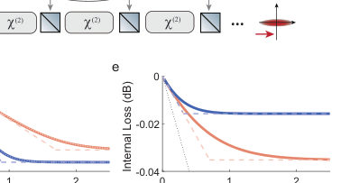
<figcaption class="paper-figure-caption"><b>Fig 2.</b> Fig. 3. Effects of External and Internal Loss. (a) External loss - loss after a squeezer introduces vacuum fluctuations, which reduces the squeezing as shown in the phase space diagrams. (b) Effect of external loss on squeezed variance (equation (11)), for input squeezing of 5 dB (blue) and 10 dB (red), with dotted lines representing simplified model of equation (12). (c) Internal Loss model of a lossy nonlinear region as a series of infinitesimal nonlinear regions and loss regions. (d) Squeezing evolution with length for two gain rates (𝑔= 12 dB/cm red and 𝑔= 27 dB/cm blue) and fixed loss rate 𝛼= 10 dB/m for a nonresonant squeezer (equation (16). Dashed lines represent the approximate...</figcaption>
</figure>
<figure class="paper-figure-card">
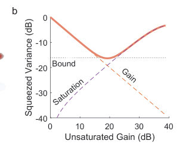
<figcaption class="paper-figure-caption"><b>Fig 3.</b> Fig. 4. Squeezer Saturation. A coherent seed at the same frequency as the signal is input to the squeezer and gets amplified and depletes the pump’s energy. The pump’s noise gets transferred to the signal, degrading the squeezing. (b) Saturation limit on</figcaption>
</figure>
<figure class="paper-figure-card">
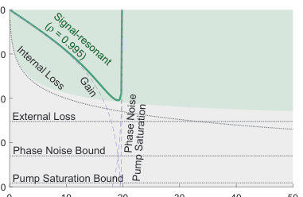
<figcaption class="paper-figure-caption"><b>Fig 4.</b> Fig. 6. Fundamental bounds on squeezed light generation. Plotted as a function of gain rate g, for different kinds of squeezers. Light green shaded region represents the feasible squeezing region, for all possible squeezer designs (nonlinear length, resonance, etc). Large dotted lines show noise bounds, for all possible squeezer designs. Solid green and faint dotted lines show the total expected squeezing and the gain-dependent noise limitations for specific squeezer designs. Plotted for internal loss rate 𝛼= 0.1 dB/cm, external loss 1 −𝜂𝑒= −25 dB, phase noise 𝛿𝜃= 0.5 mrad, signal leakage into</figcaption>
</figure>
<figure class="paper-figure-card">
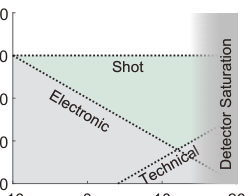
<figcaption class="paper-figure-caption"><b>Fig 5.</b> Fig. 7. Squeezed light detection. (a) Balanced homodyne detection mixes the squeezed signal (light red) with a strong local oscillator reference beam (red) and detects the difference photocurrent out of two photodetectors. (b) Parametric homodyne detection mixes the squeezed signal (light red) with a strong pump (blue) and detects the amplified signal. (c) Contributions to detection noise, in decibel shot-noise units, as a function of detected power. Parameters assumed include electronic noise with 20 dB shot noise clearance at 10 mW, excess relative intensity noise of -150 dBc/Hz for 𝜆= 1550 nm reference beam, suppressed by balanced detection with a common mode rejection ratio of 40 dB,...</figcaption>
</figure>
</div>

<p><strong>Summary.</strong> This paper develops a comprehensive, unified theoretical model to determine the practical limits on generating and measuring highly squeezed light in integrated photonic circuits. It quantifies how various noise sources—including internal loss, pump saturation, and phase noise—degrade the quantum squeezing. The resulting model offers crucial design guidance for advancing integrated quantum light sources.</p>
<p><strong>Why it may be interesting.</strong> This work provides essential theoretical tools for designing and benchmarking quantum optical devices, directly impacting the feasibility of quantum sensing and communication protocols that rely on non-classical light.</p>
<details>
<summary>Detailed structure</summary>
<p><strong>Main problem.</strong> The paper quantifies the fundamental limits imposed by various noise sources on measuring highly squeezed light, particularly for next-generation integrated squeezed-light systems.</p>
<p><strong>Main result.</strong> A unified model is developed that combines limitations from generation (e.g., internal loss, pump saturation) and detection (e.g., phase noise, electronic noise) into a single variance budget.</p>
<p><strong>Method.</strong> The authors use the Gaussian quantum optics framework, deriving variance evolution equations and applying noise mixing approximations to model the cumulative effect of multiple loss and noise processes.</p>
<p><strong>Model / system.</strong> The focus is on integrated nonlinear photonic circuits used as squeezed light sources (e.g., OPA). The analysis covers nonresonant, pump-resonant, and signal-resonant squeezing regimes.</p>
<p><strong>Key observables.</strong> Squeezed quadrature variance ($V_{-}$), anti-squeezed variance ($V_{+}$), and the overall achievable squeezing level (in dB).</p>
<p><strong>Important parameters / regimes.</strong> Nonlinearity-to-loss ratio ($g/\alpha$), internal loss rates ($\eta_i$), external loss ($\eta_e$), and phase error ($\delta	heta$).</p>
<p><strong>Assumptions / limitations.</strong> The analysis relies on the Gaussian quantum optics framework and often uses the low-loss approximation for noise summation ($1 - \eta \ll 1$).</p>
<p><strong>Figures summary.</strong> Figures illustrate noise sources in a generic measurement setup, the comprehensive variance budget combining multiple noise terms, and plots showing fundamental bounds on achievable squeezing versus gain rate.</p>
<p><strong>Paper structure.</strong> The paper progresses by first establishing the general variance budget, then deriving specific gain formulas for different squeezer types (nonresonant, signal-resonant), and finally unifying these limitations into a practical, comprehensive model.</p>
</details>
<details>
<summary>Abstract</summary>
<p>Recent experiments have demonstrated the successful generation and detection of moderately squeezed vacuum states with integrated photonics. However, in order to benefit from the reduced noise of highly squeezed light, many different noise sources must be mitigated. Here, we quantify the fundamental limits these noise sources impose on squeezing measurements and find surprising generality across different platforms and designs. We combine these different limitations into a simple model that provides practical guidance for the design and benchmarking of next-generation integrated squeezed-light systems.</p>
</details>
<p><sub><a href="#top">↑ back to top</a></sub></p>

<p><a id="paper-2606.00521"></a></p>
<h3 id="relativistic-transformation-of-temperature-revisited"><a href="http://arxiv.org/abs/2606.00521v1">Relativistic transformation of temperature revisited</a></h3>
<p><strong>Authors:</strong> Soroor Pouryazdan, Babak Vakili<br>
<strong>Type:</strong> theory · <strong>Category:</strong> statistical mechanics · <strong>PDF:</strong> <a href="https://arxiv.org/pdf/2606.00521v1">https://arxiv.org/pdf/2606.00521v1</a><br>
<strong>Analysis basis:</strong> full PDF text, analyzed in chunks
<strong>Topic relevance:</strong> <code>Keldysh / 2PI / non-Gaussian methods</code> <strong>1/5</strong></p>
<div class="figure-strip-hint">↔ Scroll figures horizontally</div>
<div class="paper-figures-scroll">
<figure class="paper-figure-card">
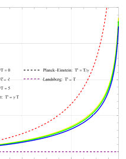
<figcaption class="paper-figure-caption"><b>Fig 1.</b> Figure 1: Dependence of the effective temperature ratio Teff/T on the velocity v for several values of the dimensionless mass-to-temperature ratio m/T, obtained from Eq. (35). The solid curve corresponds to the photon limit (m/T →0), approaching Teff≃T(1 + 1</figcaption>
</figure>
<figure class="paper-figure-card">
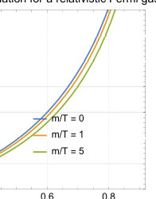
<figcaption class="paper-figure-caption"><b>Fig 2.</b> Figure 2: Effective temperature ratio Teff/T versus observer velocity v/c for representa- tive values of the dimensionless parameter AF (approximating m/T): AF = 0 (m/T ≈0), AF = 1 (m/T ∼1) and AF = 5 (m/T ≫1). Curves are obtained from the relation Teff/T = [γ2(1 + v2/(AF + 3))]1/4 and show the smooth interpolation between the ultra- relativistic (Teff≃T(1 + 1</figcaption>
</figure>
</div>

<p><strong>Summary.</strong> This paper re-examines the relativistic transformation of temperature using a rigorous thermodynamic approach based on the energy-momentum tensor. It demonstrates that temperature is not a Lorentz invariant scalar, showing that the effective temperature measured by a moving observer increases with velocity. The work unifies these concepts by introducing the inverse-temperature four-vector into a consistent relativistic framework.</p>
<p><strong>Why it may be interesting.</strong> While focused on classical thermodynamics, the rigorous handling of observer-dependence and the covariant formulation of temperature are foundational concepts relevant to relativistic quantum field theory and non-equilibrium statistical mechanics.</p>
<details>
<summary>Detailed structure</summary>
<p><strong>Main problem.</strong> The paper addresses the long-standing controversy regarding the relativistic transformation of temperature, as classical laws yield conflicting results.</p>
<p><strong>Main result.</strong> The effective temperature inferred by a moving observer consistently increases with velocity, supporting the Ott-Eddington interpretation, and temperature is shown to be an observer-dependent quantity.</p>
<p><strong>Method.</strong> The analysis uses a relativistic thermodynamic and statistical framework, starting from the energy-momentum tensor of an isotropic perfect fluid and defining an effective temperature from transformed energy densities.</p>
<p><strong>Model / system.</strong> The study analyzes three paradigmatic systems: a photon gas (blackbody radiation), a relativistic ideal gas (Maxwell-Jüttner), and a relativistic electron gas (Fermi-Dirac statistics).</p>
<p><strong>Key observables.</strong> Effective temperature ($T_{	ext{eff}}$), the ratio $T_{	ext{eff}}/T$, and the inverse-temperature four-vector ($eta_\mu$).</p>
<p><strong>Important parameters / regimes.</strong> Observer velocity ($v$), system equation of state ($P/
ho$), and the mass-to-temperature ratio ($m/T$).</p>
<p><strong>Assumptions / limitations.</strong> The analysis assumes the standard energy-momentum tensor for a perfect fluid, neglecting dissipative effects like heat conduction or shear viscosity.</p>
<p><strong>Figures summary.</strong> Figures illustrate the smooth interpolation of the effective temperature ratio ($T_{	ext{eff}}/T$) versus velocity for various particle mass regimes, confirming the dependence on the equation of state.</p>
<p><strong>Paper structure.</strong> The paper reviews conflicting classical transformation laws, develops the general formalism using the energy-momentum tensor, analyzes specific gases (photon, ideal, Fermi), and concludes by unifying the description via the inverse-temperature four-vector.</p>
</details>
<details>
<summary>Abstract</summary>
<p>The relativistic transformation of temperature has long remained controversial, with the classical laws of Planck-Einstein, Ott-Eddington-Moller and Landsberg yielding conflicting results. We reexamine this issue from a relativistic thermodynamic and statistical perspective, starting from the energy-momentum tensor of an isotropic system and defining the effective temperature Teff as that inferred by a moving observer from the transformed energy density. Analyses of a photon gas, a relativistic ideal gas and an electron gas show that Teff consistently increases with velocity, supporting the Ott-Eddington interpretation while depending on the system's equation of state. These results indicate that temperature is not a Lorentz-invariant scalar but an observer-dependent quantity. A consistent relativistic description emerges when temperature is related to the inverse-temperature four-vector beta, linking operational and invariant viewpoints within a unified thermodynamic framework.</p>
</details>
<p><sub><a href="#top">↑ back to top</a></sub></p>

<p><a id="paper-2606.01826"></a></p>
<h3 id="revisiting-the-quantum-guided-cluster-algorithm-improvements-and-numerical-experiments"><a href="http://arxiv.org/abs/2606.01826v1">Revisiting the Quantum-Guided Cluster Algorithm: Improvements and Numerical Experiments</a></h3>
<p><strong>Authors:</strong> Peter J. Eder, Sarah Braun<br>
<strong>Type:</strong> experiment · <strong>Category:</strong> disordered systems and neural networks · <strong>PDF:</strong> <a href="https://arxiv.org/pdf/2606.01826v1">https://arxiv.org/pdf/2606.01826v1</a><br>
<strong>Analysis basis:</strong> full PDF text, analyzed in chunks
<strong>Topic relevance:</strong> <code>methods for driven-dissipative</code> <strong>1/5</strong></p>
<div class="figure-strip-hint">↔ Scroll figures horizontally</div>
<div class="paper-figures-scroll">
<figure class="paper-figure-card">
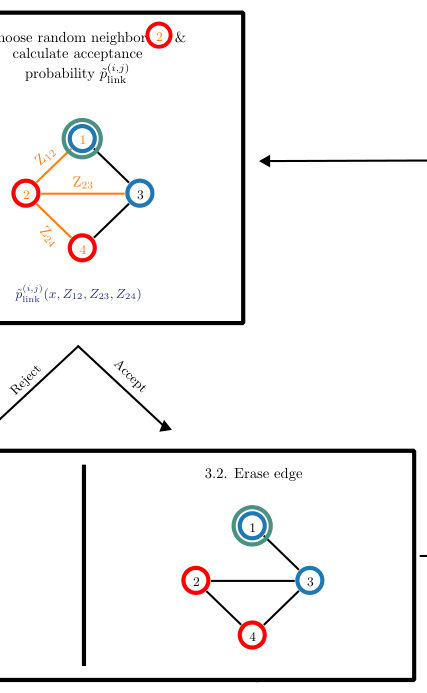
<figcaption class="paper-figure-caption"><b>Fig 1.</b> FIG. 1: Illustration of the cluster-building process, characterizing the pseudocode function CreateCluster() for NNNs, similar to [1, Figure 3]. Starting from a randomly selected seed node (here, i = 1), neighboring vertices are iteratively considered for inclusion in the cluster with probability ˜p(i,j) link from Equation (6), determined by the correlation matrix Z. Accepted nodes undergo a shrinking step before further expansion, while rejected nodes have their edge to the cluster removed. © 2025 IEEE.</figcaption>
</figure>
<figure class="paper-figure-card">
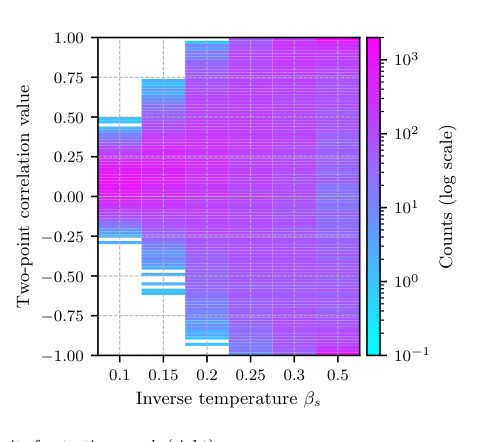
<figcaption class="paper-figure-caption"><b>Fig 2.</b> FIG. 2: The plots in (a) and the left panel of (b) show the percentage of optimal solutions found as a function of the number of iterations for the CA considering next-nearest neighbors (NNN) guided by various correlations, as well as nearest neighbors (NN) guided by coupling constants (CCs). In (a), the same graph instances as in [1] are used, while in (b) ten random 40-regular graphs of size n = 100 are considered. Together, these subfigures illustrate the performance of the CA guided by CCs, semidefinite programming (SDP) correlations, and thermal correlations sampled from Monte Carlo (MC) simulations at different inverse temperatures βs for NNN interactions. The right panel of (b) shows...</figcaption>
</figure>
<figure class="paper-figure-card">

<figcaption class="paper-figure-caption"><b>Fig 3.</b> FIG. 3: The percentage of optimal solutions found is shown for the CA with nearest neighbor (NN) and next-nearest neighbor (NNN) interactions, guided by QAOA correlations at different depths and coupling constants (CCs). The graphs have regular degree 27 with n = 28 nodes; 50 mutations with 50n iterations are performed. In (a), the link probability ˜plink using CCs is evaluated at each iteration when adding a node to the cluster: updates with ˜plink &lt; 0 are rejected, updates with ˜plink = 0 are accepted, and correlations are considered only otherwise. In (b), this evaluation using CCs is omitted.</figcaption>
</figure>
<figure class="paper-figure-card">

<figcaption class="paper-figure-caption"><b>Fig 4.</b> FIG. 4: The percentage point differences in optimal solutions found are shown for n = 28 for the CA considering nearest neighbors (NNs) and next-nearest neighbors (NNNs), using QAOA correlations at depth three, coupling constants (CCs), and for simulated annealing (SA). Each data point is obtained from 50 mutations with 50n iterations. The left panel presents the difference between the QAOA-guided CAs and the CC-guided CAs, the middle panel shows the individual performance differences for both approaches, and the right panel compares the CC-guided CAs with SA.</figcaption>
</figure>
<figure class="paper-figure-card">

<figcaption class="paper-figure-caption"><b>Fig 5.</b> FIG. 5: In (a), the times to solution (TTS) with successful run probability r = 99 % are shown for the CA considering next-nearest neighbor (NNN) interactions guided by thermal correlations (MC) on graphs with n = 100 and degrees three, 20, and 40, together with the coupling-constant (CC) version of the CA and simulated annealing (SA). The values in brackets on the x-axis denote the mean approximation ratios of the samples used to compute the correlations guiding the CA. In (b), bar diagrams are shown that indicate, for each of the ten graph instances and inverse sample temperatures βs, whether the thermal samples contain an optimal solution.</figcaption>
</figure>
</div>

<p><strong>Summary.</strong> This work revisits and significantly extends the Quantum-Guided Cluster Algorithm (QGCA) for solving Max-Cut problems on spin glasses. By incorporating structural information like next-nearest-neighbor correlations and developing an MCMC variant, the authors demonstrate substantial performance gains over classical methods. The findings highlight the power of using quantum-derived information to accelerate sampling and optimization in disordered quantum systems.</p>
<p><strong>Why it may be interesting.</strong> The use of quantum-inspired correlations (like those from QAOA or SDP) to guide classical sampling algorithms for hard optimization problems is highly relevant to developing efficient simulation techniques for complex quantum many-body systems.</p>
<details>
<summary>Detailed structure</summary>
<p><strong>Main problem.</strong> The paper addresses the NP-hard Max-Cut problem by improving classical optimization algorithms using quantum-inspired correlation information.</p>
<p><strong>Main result.</strong> The Quantum-Guided Cluster Algorithm (QGCA), especially when incorporating Next-Nearest-Neighbor (NNN) information or advanced correlations like SDP, significantly outperforms standard Simulated Annealing and simpler cluster updates.</p>
<p><strong>Method.</strong> The core method is an iterative cluster update algorithm guided by precomputed two-point correlations derived from various sources (SDP, QAOA, thermal MC).</p>
<p><strong>Model / system.</strong> The model is the Max-Cut problem on undirected graphs, mathematically equivalent to finding the ground state of an Ising spin glass Hamiltonian. The analysis is performed on random regular graphs and tile-planted instances.</p>
<p><strong>Key observables.</strong> Percentage of optimal solutions found, Time-to-Solution (TTS), autocorrelation functions of magnetization and energy, and approximation ratios.</p>
<p><strong>Important parameters / regimes.</strong> Inverse temperature ($eta$), QAOA depth ($p=1, 3$), graph degree (e.g., 3, 27), and the inclusion of NNN interactions.</p>
<p><strong>Assumptions / limitations.</strong> The analysis often assumes the validity of the MCMC formulation for sampling the Boltzmann distribution and relies on the quality of the input correlation sources.</p>
<p><strong>Figures summary.</strong> Figures compare optimal solution percentages and autocorrelation decay rates for various algorithms (QGCA vs. SA vs. SSF) across different graph degrees and correlation depths.</p>
<p><strong>Paper structure.</strong> The paper builds from the basic correlation-guided CA, extends it to include NNN information, and culminates in developing and analyzing its extension into a full Markov-Chain Monte Carlo (MCMC) sampling algorithm.</p>
</details>
<details>
<summary>Abstract</summary>
<p>We study correlation-guided cluster algorithms for solving the Max-Cut problem that iteratively try to improve solutions by updating clusters of nodes. Building on the recently proposed quantum-guided cluster algorithm (QGCA) [arXiv:2508.10656], which leverages precomputed two-point correlations to guide collective updates, we extend the cluster construction by incorporating next-nearest-neighbor (NNN) information. We evaluate this extension across different correlation sources on random regular graphs and non-degenerate tile-planted instances. Notably, we observe particularly strong performance on non-degenerate instances and provide a scaling analysis for this class. Finally, we outline an extension toward a correlation-guided Markov-chain Monte Carlo algorithm, whose detailed analysis remains an open direction for future work.</p>
</details>
<p><sub><a href="#top">↑ back to top</a></sub></p>

<p><a id="paper-2606.01541"></a></p>
<h3 id="smooth-velocity-shuttling-for-suppressing-valley-excitations-in-disordered-sisige-quantum-dots"><a href="http://arxiv.org/abs/2606.01541v1">Smooth velocity shuttling for suppressing valley excitations in disordered Si/SiGe quantum dots</a></h3>
<p><strong>Authors:</strong> Ryo Nagai, Takashi Takemoto, Hiroyuki Mizuno<br>
<strong>Type:</strong> theory · <strong>Category:</strong> quantum information and computing · <strong>PDF:</strong> <a href="https://arxiv.org/pdf/2606.01541v1">https://arxiv.org/pdf/2606.01541v1</a><br>
<strong>Analysis basis:</strong> full PDF text, analyzed in chunks
<strong>Topic relevance:</strong> <code>non-equilibrium dynamics</code> <strong>1/5</strong></p>
<div class="figure-strip-hint">↔ Scroll figures horizontally</div>
<div class="paper-figures-scroll">
<figure class="paper-figure-card">

<figcaption class="paper-figure-caption"><b>Fig 1.</b> FIG. 1. Shuttling velocity profiles (left) and spectra (right). The black curve corresponds to the time-dependence of the conventional shuttling velocity control (β = 0), and the light- blue and blue curves correspond to that of our proposed shut- tling controls with β = 0.5 and β = 1, respectively.</figcaption>
</figure>
<figure class="paper-figure-card">

<figcaption class="paper-figure-caption"><b>Fig 2.</b> FIG. 2. Gate-voltage waveforms for implementing the pro- posed shuttling method (smooth velocity shuttling). The gate- voltage waveforms (12) can be generated by frequency modu- lation of the conventional sine waveforms (10) by signal s(t). The time dependence of the waveforms are shown in the top, middle, and bottom panels corresponding to β = 0, 0.5, and 1, respectively.</figcaption>
</figure>
<figure class="paper-figure-card">

<figcaption class="paper-figure-caption"><b>Fig 3.</b> FIG. 3. Schematic diagram of the SiGe/Si/SiGe quantum dot shuttling device used in the numerical simulations. Gate electrodes are arranged at intervals of L along the shuttling direction (x-axis), and a frequency-modulated (FM) voltage Vm(t) with a period of N = 4 is applied. Rectangular gates for confining electrons in the y-direction are placed on both sides of the shuttling path, and a constant DC voltage VCG is applied. Electrons are confined within the quantum dots formed by these electrodes and transported through the Si well.</figcaption>
</figure>
<figure class="paper-figure-card">

<figcaption class="paper-figure-caption"><b>Fig 4.</b> FIG. 4. Numerical calculation results of the smooth velocity shuttling protocol. From top to bottom, the changes of the signal wave s(t), the applied gate voltage Vn(t), the shuttling velocity v(t), and the quantum dot size ax(t) against the normalized time t/T are shown. It can be confirmed that the acceleration during transport is modulated by the velocity shaping parameter β, and the high-frequency components are suppressed.</figcaption>
</figure>
<figure class="paper-figure-card">

<figcaption class="paper-figure-caption"><b>Fig 5.</b> FIG. 5. Examples of the valley coupling landscape ∆(x) along the shuttling path. Random spatial variations of the valley coupling are shown for various disorder strengths characterized by the ratio |∆0|/σ∆. A smaller ratio corresponds to a stronger influence of disorder induced by alloy fluctuations.</figcaption>
</figure>
</div>

<p><strong>Summary.</strong> This paper introduces a novel, analytically derived method—smooth velocity shuttling—to suppress detrimental valley excitations in silicon quantum dots. By shaping the gate voltage using frequency modulation, the authors suppress high-frequency components in the shuttling velocity spectrum. This technique significantly improves spin coherence and fidelity, offering a robust pathway for large-scale silicon quantum computing architectures.</p>
<p><strong>Why it may be interesting.</strong> This work provides a concrete, control-level engineering solution for mitigating decoherence sources (valley mixing) in solid-state qubits, which is highly relevant to building scalable quantum processors.</p>
<details>
<summary>Detailed structure</summary>
<p><strong>Main problem.</strong> The primary challenge is suppressing non-adiabatic valley excitations during electron shuttling in silicon quantum dots, as these transitions cause spin dephasing and limit qubit fidelity.</p>
<p><strong>Main result.</strong> The authors propose a smooth velocity shuttling protocol, mathematically equivalent to window function design, which significantly reduces spin infidelity in the moderate-to-low disorder regime.</p>
<p><strong>Method.</strong> They derive an analytical guideline by mapping the time-domain velocity profile design onto signal processing window function theory, implementing this via frequency-modulated gate voltages.</p>
<p><strong>Model / system.</strong> The system is modeled using Si/SiGe quantum dots hosting spin qubits, analyzed via an effective Hamiltonian that includes valley and spin degrees of freedom. The dynamics are governed by the time-dependent shuttling velocity $v(t)$.</p>
<p><strong>Key observables.</strong> Average spin infidelity, spin purity $P_s(t)$, and the probability of valley excitation $p_v$.</p>
<p><strong>Important parameters / regimes.</strong> Disorder strength ratio $|\Delta_0|/\sigma_\Delta$, the smoothness parameter $eta$, and the deterministic valley coupling $|\Delta_0|$.</p>
<p><strong>Assumptions / limitations.</strong> The analysis relies on the perturbation approximation for valley transitions and assumes the applicability of the effective mass approximation for the potential landscape.</p>
<p><strong>Figures summary.</strong> Figures illustrate the comparison of velocity waveforms (conventional vs. smooth/Tukey-window based) and show the time evolution of spin impurity and infidelity, demonstrating fidelity maintenance with smooth control.</p>
<p><strong>Paper structure.</strong> The paper introduces the problem (valley excitation during shuttling), derives the connection to signal processing window functions, proposes the FM gate voltage implementation, and validates the method through numerical simulations showing fidelity improvement.</p>
</details>
<details>
<summary>Abstract</summary>
<p>Coherent electron shuttling is a key requirement for realizing scalable silicon quantum computing architectures. However, in silicon qubits, the existence of nearly degenerate conduction-band valleys poses a significant challenge because non-adiabatic transitions to excited valley states cause spin dephasing via spin-valley mixing. In this paper, we propose a smooth velocity shuttling protocol to suppress these valley excitations. By mapping the time-domain design of the shuttling velocity profile onto the design problem of window functions in signal processing, we establish an analytical and intuitive design guideline that does not require computationally expensive numerical optimization. We demonstrate that the high-frequency sidelobes of the shuttling velocity spectrum can be effectively suppressed by applying a frequency-modulated gate voltage based on the Tukey window. Through numerical simulations incorporating realistic spatial randomness of the valley landscape, we show that the proposed smooth velocity control significantly reduces the average spin infidelity in the moderate-to-low disorder regime ($|Δ_0|/σ_Δ\simeq \mathcal{O}(1)$). Furthermore, we clarify that in devices designed with a large deterministic valley coupling $|Δ_0|$, combining it with this smoothing technique improves robustness against valley disorder. Our results underscore that this simple, control-level velocity shaping provides a robust pathway toward high-fidelity spin transport in large-scale silicon quantum processors.</p>
</details>
<p><sub><a href="#top">↑ back to top</a></sub></p>

<p><a id="paper-2606.02013"></a></p>
<h3 id="successes-and-challenges-of-using-semidefinite-programming-for-the-study-of-spin-chain-hamiltonians"><a href="http://arxiv.org/abs/2606.02013v1">Successes and challenges of using Semidefinite Programming for the study of Spin Chain Hamiltonians</a></h3>
<p><strong>Authors:</strong> David Berenstein, P. N. Thomas Lloyd<br>
<strong>Type:</strong> theory · <strong>Category:</strong> statistical mechanics · <strong>PDF:</strong> <a href="https://arxiv.org/pdf/2606.02013v1">https://arxiv.org/pdf/2606.02013v1</a><br>
<strong>Analysis basis:</strong> full PDF text, analyzed in chunks
<strong>Topic relevance:</strong> <code>analog quantum simulation</code> <strong>1/5</strong></p>
<div class="figure-strip-hint">↔ Scroll figures horizontally</div>
<div class="paper-figures-scroll">
<figure class="paper-figure-card">

<figcaption class="paper-figure-caption"><b>Fig 1.</b> FIG. 1. The addition of the additional charge constraints generated from the boost operator have</figcaption>
</figure>
<figure class="paper-figure-card">

<figcaption class="paper-figure-caption"><b>Fig 2.</b> FIG. 2. Building up the Virasoro generators for the Ising model allowed us to explore if there</figcaption>
</figure>
<figure class="paper-figure-card">

<figcaption class="paper-figure-caption"><b>Fig 3.</b> FIG. 3. The left figure is the ratio,  ⟨cicjc† kc† l ⟩−⟨cicjc† kc† l ⟩W  /⟨cicjc† kc† l ⟩, where ⟨cicjc† kc† l ⟩is cal-</figcaption>
</figure>
<figure class="paper-figure-card">

<figcaption class="paper-figure-caption"><b>Fig 4.</b> FIG. 4. Here we plot ⟨β1γi⟩and ⟨γ1βi⟩for a N = 10 lattice. The circles represent the SDP results</figcaption>
</figure>
<figure class="paper-figure-card">

<figcaption class="paper-figure-caption"><b>Fig 5.</b> FIG. 5. ⟨H† nHn⟩for the three-state Potts model as a function of the transverse field µ, using the</figcaption>
</figure>
</div>

<p><strong>Summary.</strong> This paper analyzes the utility of Semidefinite Programming (SDP) for studying quantum spin chains, testing its ability to calculate ground state energies and correlation functions for models like the Ising and Potts chains. While SDP provides exact results for free fermion systems, its performance degrades for interacting models, highlighting the need for incorporating deeper physical constraints to make the method scalable and accurate.</p>
<p><strong>Why it may be interesting.</strong> The rigorous application of convex optimization (SDP) to quantum many-body systems provides a powerful, albeit computationally demanding, theoretical tool for bounding and calculating quantum observables, especially useful for understanding critical phenomena.</p>
<details>
<summary>Detailed structure</summary>
<p><strong>Main problem.</strong> The paper investigates the effectiveness and limitations of using Semidefinite Programming (SDP) methods to analyze spin chain Hamiltonians, aiming to determine when and why the method successfully extracts physical properties.</p>
<p><strong>Main result.</strong> SDP successfully finds the exact ground state energy and two-point functions for free fermion systems, but its ability to estimate higher-order correlators degrades significantly for interacting models, and the method suffers from poor scaling with lattice volume.</p>
<p><strong>Method.</strong> The core method is formulating the problem as a convex optimization problem (minimizing the expectation value of the Hamiltonian) subject to positivity constraints on the density matrix, which is solved via SDP.</p>
<p><strong>Model / system.</strong> The study focuses on spin chain Hamiltonians, specifically applying the technique to the transverse-field Ising model and the 3-state Potts model, and analyzing the behavior in the free fermion limit.</p>
<p><strong>Key observables.</strong> Ground state energy ($E_0/N$), first excited state energy ($E_1/N$), ground state correlators, and conformal data (central charge, critical exponents) at criticality.</p>
<p><strong>Important parameters / regimes.</strong> The coupling constant ($\mu$), lattice volume ($N$), and the specific symmetry constraints (charge, Virasoro generators) used in the SDP formulation.</p>
<p><strong>Assumptions / limitations.</strong> The method relies on the ability to express the problem as a convex optimization problem, and its success is strongly tied to the system being exactly solvable (free fermions).</p>
<p><strong>Figures summary.</strong> Figures illustrate the convergence of SDP results for $E_0/N$ and $E_1/N$ for the Ising and Potts models, and show the construction and consistency checks using lattice Virasoro generators.</p>
<p><strong>Paper structure.</strong> The paper systematically introduces the SDP formulation, applies it to specific models (Ising, Potts), and then explores advanced diagnostics by incorporating symmetry constraints (charge, Virasoro) and analyzing the free fermion limit.</p>
</details>
<details>
<summary>Abstract</summary>
<p>We study semidefinite programming (SDP) methods to analyze spin chain Hamiltonians. We examine the ground state energy, the first excited charged states and ground state correlators in two simple models: the Ising model in a transverse magnetic field and the closely related 3-state Potts model. Our goal is to understand precisely what the SDP program is doing and when it works well, why it does so. We focus on the following novel ingredients: using charge constraints to obtain excited states and to see if additional constraints from integrable models are effective at improving the method.   At criticality we also explore to what extent we can use approximate Virasoro correlators to extract conformal data: the central charge and some critical exponents of charged states. We also use these to identify the location of the phase transition. In the special case where the system is made of free fermions we prove that the SDP finds the exact energy of the ground state and produces the correct two point functions of the fermions. Away from free fermion theories, the SDP gets progressively worse at estimating data beyond the value of the ground state energy (like correlation functions), although it qualitatively matches these. In order to be effective, the SDP seems to run into scaling issues where the amount of input needed scales poorly with the lattice volume.</p>
</details>
<p><sub><a href="#top">↑ back to top</a></sub></p>
<h2 id="other-papers-23">Other papers (23)</h2>
<p><em>Papers from primary archives without highlighted authors or any topic match. Click to expand.</em></p>
<details>
<summary>Show other papers</summary>

<p><a id="paper-2606.00541"></a></p>
<h3 id="a-nisq-aware-hybrid-quantum-classical-framework-for-scalable-combinatorial-optimization"><a href="http://arxiv.org/abs/2606.00541v1">A NISQ-Aware Hybrid Quantum-Classical Framework for Scalable Combinatorial Optimization</a></h3>
<p><strong>Authors:</strong> Haolong Ding, Mohan Wu, Yin Xu, Hua Xu<br>
<strong>Type:</strong> both · <strong>Category:</strong> quantum information and computing · <strong>PDF:</strong> <a href="https://arxiv.org/pdf/2606.00541v1">https://arxiv.org/pdf/2606.00541v1</a><br>
<strong>Analysis basis:</strong> full PDF text, analyzed in chunks</p>
<div class="figure-strip-hint">↔ Scroll figures horizontally</div>
<div class="paper-figures-scroll">
<figure class="paper-figure-card">

<figcaption class="paper-figure-caption"><b>Fig 1.</b> FIGURE 1. Hybrid Quantum-Classical Workflow.</figcaption>
</figure>
<figure class="paper-figure-card">

<figcaption class="paper-figure-caption"><b>Fig 2.</b> FIGURE 2. Localized Grover Amplitude Amplification Circuit</figcaption>
</figure>
<figure class="paper-figure-card">

<figcaption class="paper-figure-caption"><b>Fig 3.</b> FIGURE 3. Comparison of route-length statistics and normalized ratios for ACO, QACO, GA, Greedy, and Hybrid Framework Algorithm.</figcaption>
</figure>
<figure class="paper-figure-card">

<figcaption class="paper-figure-caption"><b>Fig 4.</b> FIGURE 4. Route geometry comparison on the Bays-29 dataset for the proposed hybrid framework, QACO, ACO, GA, and Greedy methods.</figcaption>
</figure>
<figure class="paper-figure-card">

<figcaption class="paper-figure-caption"><b>Fig 5.</b> FIGURE 5. Algorithm comparison on random datasets.</figcaption>
</figure>
</div>
<p><strong>Summary.</strong> This paper introduces a NISQ-aware hybrid framework to solve large combinatorial optimization problems by breaking them down into manageable subproblems. It uses a quantum genetic algorithm enhanced by periodic amplitude amplification for local search, followed by classical refinement. The method proves scalable and robust, offering a practical paradigm for quantum advantage in the near-term quantum era.</p>
<p><strong>Why it may be interesting.</strong> This work directly addresses the practical limitations of current quantum hardware by proposing a structured, resource-aware methodology for applying quantum computation to classically hard optimization problems, which is a key area for quantum information scientists.</p>
<details>
<summary>Detailed structure</summary>
<p><strong>Main problem.</strong> The core challenge is achieving scalable combinatorial optimization for NP-hard problems like TSP under the severe resource constraints of Noisy Intermediate-Scale Quantum (NISQ) hardware.</p>
<p><strong>Main result.</strong> The proposed hybrid framework consistently outperforms classical and quantum-inspired baselines, demonstrating that scalability is achieved through structured decomposition rather than increasing quantum circuit complexity.</p>
<p><strong>Method.</strong> It employs a three-stage pipeline: clustering-based decomposition to create resource-bounded subproblems, followed by a Quantum Genetic Algorithm (QGA) for probabilistic local search, and concluding with a classical refinement stage for global consistency.</p>
<p><strong>Model / system.</strong> The model is a hybrid quantum-classical optimization framework designed for NISQ devices. It operates by evolving a probabilistic distribution over the solution space, utilizing parameterized quantum states and localized amplitude amplification.</p>
<p><strong>Key observables.</strong> Solution quality (minimum path length), scalability (performance gain vs. problem size), and robustness under simulated noise.</p>
<p><strong>Important parameters / regimes.</strong> Subproblem size limit (M), amplitude amplification interval (Delta G), and noise levels (up to 10%).</p>
<p><strong>Assumptions / limitations.</strong> The framework assumes that large problems can be effectively decomposed into smaller, qubit-compatible subproblems, and that periodic, localized quantum enhancements are sufficient for convergence.</p>
<p><strong>Figures summary.</strong> Figures illustrate the three-stage workflow, localized Grover amplitude amplification circuits, and comparative performance ratios/scaling trends against various baselines.</p>
<p><strong>Paper structure.</strong> The paper details the necessity of the hybrid approach due to NISQ limitations, introduces the decomposition $
ightarrow$ QGA/Amplitude Amplification $
ightarrow$ Classical Refinement pipeline, validates performance on benchmark datasets, and analyzes robustness via ablation studies.</p>
</details>
<details>
<summary>Abstract</summary>
<p>Scalable combinatorial optimization under resource-constrained quantum hardware remains a fundamental challenge in the Noisy Intermediate-Scale Quantum (NISQ) era, due to the mismatch between exponentially growing solution spaces and limited quantum computational capacity. In this work, we propose a NISQ-aware hybrid quantum-classical optimization framework that reformulates large-scale combinatorial optimization as a resource-bounded distribution evolution process. Instead of directly optimizing individual solutions, the proposed framework operates on a probabilistic representation of the solution space, enabling efficient exploration under hardware constraints. Specifically, large problem instances are decomposed into qubit-compatible subproblems via clustering-based decomposition, ensuring resource-bounded optimization. Within each subproblem, a quantum genetic algorithm evolves the solution distribution, while periodically embedded amplitude amplification acts as a controlled quantum enhancement mechanism that accelerates convergence without increasing circuit depth. A classical refinement stage ensures global solution consistency. Extensive experiments on benchmark and synthetic datasets demonstrate that the proposed framework consistently outperforms classical and quantum-inspired baselines, with performance gains that become more pronounced as problem scale increases. This scale-dependent behavior indicates that scalability is achieved through structured decomposition rather than increased quantum complexity. Noise simulations further confirm robustness under realistic NISQ conditions, and ablation studies validate that both quantum evolutionary search and amplitude amplification contribute significantly to performance improvements.</p>
</details>
<p><sub><a href="#top">↑ back to top</a></sub></p>

<p><a id="paper-2606.00818"></a></p>
<h3 id="a-retinomorphic-optical-spiking-neuron-for-camouflaged-object-detection"><a href="http://arxiv.org/abs/2606.00818v1">A Retinomorphic Optical Spiking Neuron for Camouflaged Object Detection</a></h3>
<p><strong>Authors:</strong> Srilagna Sahoo, Adwaaiit Pande, Kartikey Thakar, Shubham Sahay, Saurabh Lodha<br>
<strong>Type:</strong> both · <strong>Category:</strong> disordered systems and neural networks · <strong>PDF:</strong> <a href="https://arxiv.org/pdf/2606.00818v1">https://arxiv.org/pdf/2606.00818v1</a><br>
<strong>Analysis basis:</strong> full PDF text, analyzed in chunks</p>
<div class="figure-strip-hint">↔ Scroll figures horizontally</div>
<div class="paper-figures-scroll">
<figure class="paper-figure-card">

<figcaption class="paper-figure-caption"><b>Fig 1.</b> Fig. 1: Device architecture, the biological phototransduction process, temporal membrane potentials (VM), and artificial retinomorphic vision system. (a) Device schematic of a three- back-gated (channel gate (GC) and two barrier gates (GBs) shorted together) 2D-WSe2 subthreshold phototransistor (2DSpT) with hBN as the gate dielectric. (b) A false-colored optical micrograph image of the fabricated 2DSpT. The green dashed line indicates the boundary of the hBN flake, and the red shaded region defines the WSe2 flake. (c) Thickness profiles of WSe2 and hBN flakes. (d) The biological phototransduction process, under dark and illuminated conditions, is highlighted in the plasma membrane of the...</figcaption>
</figure>
<figure class="paper-figure-card">

<figcaption class="paper-figure-caption"><b>Fig 2.</b> Fig. 2: Optoelectronic anti-ambipolar response (bell-shaped transfer characteristic) of 2DSpT and underlying device physics. (a) Biasing schematic for 2DSpT is configured to measure the device drain current (ID) as a function of the channel gate (VGC) and barrier gate (VGB) biases. The two color maps show 2DSpT drain currents (b) in dark and 480 nm (2.4 nW) illuminated conditions with respect to VGC and VGB. (c) Bell-shaped ID was extracted along the diagonal arrow marked in the color maps under dark, 480 nm and 800 nm illuminated conditions for varying intensities, where VGB = -VGC. (d) Right-shifted bell-shaped current at 480 nm (2.4 nW) relative to dark condition is shown to elucidate...</figcaption>
</figure>
<figure class="paper-figure-card">

<figcaption class="paper-figure-caption"><b>Fig 3.</b> Fig. 3: Wavelength- and intensity-sensitive spike encoding by a biomimetic optical spiking HH-neuron (OSHN) incorporating 2DSpT as a photo-modulated Na-channel and the spiking properties under dark and 480 nm, and 800 nm illumination at varying intensities. (a) Action potential, VM of OSHN as a function of external synaptic current, Isyn. Time slots have been numerically assigned based on changes in illumination conditions. (b) The spike rate, ISI−1, and (c) the maximum energy consumption per spike (EPS) extracted from (a) as a function of Isyn. Additional spike properties, including (d) spike number and (e) average spike width vs. Isyn, as extracted from (a).</figcaption>
</figure>
<figure class="paper-figure-card">

<figcaption class="paper-figure-caption"><b>Fig 4.</b> Fig. 4: Biomimicking of visual adaptation. (a) The concepts of scotopic and photopic vision illustrate illumination intensity adaptation and changes in detection threshold. Demonstration of (b) scotopic and (d) photopic adaptive action potential (VM) by OSHN that responds to variation in illumination by adjusting the post-hyperpolarization times and spiking threshold of VM, portraying effective gain control of ganglion cells. (c), (e) The extracted instantaneous spiking rate from (b) and (d), respectively, illustrates the effective emulation of sensitivity adjustment of rods and cones in response to variation in illumination.</figcaption>
</figure>
<figure class="paper-figure-card">

<figcaption class="paper-figure-caption"><b>Fig 5.</b> Fig. 5: Biomimetic center-surround receptive field (CSRF) mediated ON-RGC spiking. (a) Light interpretation path of human retina (light→RGC→BC→PC→synaptic response→BC→RGC→optic nerve) and CSRF field of RGC highlighting PCs, BCs, HCs, ACs, and ganglion cells. (b) Schematic of biological ON-center/OFF-surround RGC spiking for different dark and illumination patterns. (c) Circuit schematic used to emulate the ON-center/OFF-surround recep- tive field of RGCs with lateral inhibition to regulate the forward retinal response. (d) Action potential of OSHN in response to the center-surround light pattern of the PCs, corresponding extracted raster plot and spiking rates under dark and varying...</figcaption>
</figure>
</div>
<p><strong>Summary.</strong> This paper presents a novel, energy-efficient neuromorphic system for camouflage object detection by building an Optical Spiking Neuron (OSHN) based on a 2D phototransistor. The OSHN successfully mimics complex retinal functions, including Center-Surround Receptive Fields and visual adaptation. By integrating these bio-realistic stages into an SNN, the system achieves state-of-the-art accuracy while operating with ultra-low power consumption.</p>
<p><strong>Why it may be interesting.</strong> The work represents a strong convergence of condensed matter physics (2D materials, phototransistors) and computational neuroscience (SNNs, retinal modeling), offering a hardware-level approach to bio-inspired computation.</p>
<details>
<summary>Detailed structure</summary>
<p><strong>Main problem.</strong> Developing energy-efficient, low-latency, and highly accurate vision systems capable of detecting camouflaged objects by mimicking complex retinal preprocessing functions.</p>
<p><strong>Main result.</strong> A Center-Surround Receptive Field (CSRF)-augmented Spiking Neural Network (SNN) achieved significant accuracy improvements (up to 28.4%) over conventional methods on camouflage detection benchmarks.</p>
<p><strong>Method.</strong> The system integrates a Hodgkin-Huxley-based Optical Spiking Neuron (OSHN) built from a 2D phototransistor (2DSpT) to emulate retinal pathways like CSRF, visual adaptation, and color opponency.</p>
<p><strong>Model / system.</strong> The core is the OSHN, which uses a 2DSpT operating in the subthreshold regime to achieve low energy per spike (e.g., 2 pJ at 480 nm). The overall framework models the photoreceptor $  o$ Bipolar Cell $   o$ RGC pathway.</p>
<p><strong>Key observables.</strong> Spike rate (0-2 kHz), Energy per Spike (0.9 pJ - 24.5 pJ), Classification Accuracy (up to 95.9% on synthetic data), and Center-Surround spiking patterns.</p>
<p><strong>Important parameters / regimes.</strong> Wavelengths (480 nm, 800 nm), Time constants ($ au_s = 30   ext{ ms}$, $    au_p = 27   ext{ ms}$), and specific gate biases for the 2DSpT.</p>
<p><strong>Assumptions / limitations.</strong> The system assumes that CSRF processing and visual adaptation are key mechanisms for enhancing contrast sensitivity, which is crucial for distinguishing camouflaged objects.</p>
<p><strong>Figures summary.</strong> Figures illustrate the 2DSpT structure, the OSHN action potential under varying light conditions, the CSRF implementation using DoG filters, and the final performance comparison of the SNN on COD datasets.</p>
<p><strong>Paper structure.</strong> The paper progresses from detailing the physical device (2DSpT) and its phototransduction mechanism, to modeling the OSHN circuit dynamics (HH model), then implementing multi-stage biomimetic preprocessing (CSRF, VA), and finally applying the full framework to achieve high performance in camouflaged object detection.</p>
</details>
<details>
<summary>Abstract</summary>
<p>Advanced vision systems require retinomorphic, energy-efficient spike-based preprocessing of dynamic visual scenes. Here, we demonstrate multiple retinal preprocessing functionalities by leveraging a Hodgkin-Huxley-based optical spiking neuron (OSHN) that incorporates a two-dimensional anti-ambipolar phototransistor operated in the subthreshold regime to minimize power consumption. OSHN exhibits wavelength- and intensity-sensitive spike encoding with energy consumption per spike of 0.9 pJ under dark, 2 pJ at 480 nm (mid wavelength, M), and 24.5 pJ at 800 nm (long wavelength, L). The low (biological)-to-high spiking rate (0 - 2 kHz) with substantially faster response times (4.2 $μ$s - 1.25 ms) than the human retina (30 ms - 60 ms), reveal OSHN's fast decision-making capability. OSHN facilitates concurrent spectral-spatial processing by emulating retinal antagonistic center-surround receptive fields (CSRFs) at a single wavelength (480 nm or 800 nm) with varying intensities, visual adaptation (at 480 nm) to prevent system saturation, and L-M cone opponency in midget ganglion cells. Finally, a CSRF-augmented spiking neural network (SNN) has been developed for camouflaged object detection, achieving 4.4%, 10.4%, and 28.4% improvements in accuracy over conventional SNN on FMNIST, COD10K, and synthetic camouflaged datasets, outperforming existing photoactive spiking architectures while enabling event-driven intelligent edge vision systems.</p>
</details>
<p><sub><a href="#top">↑ back to top</a></sub></p>

<p><a id="paper-2606.01718"></a></p>
<h3 id="asymptotic-recovery-in-fourier-spectral-methods-for-the-schrodinger-equation-with-point-singularities"><a href="http://arxiv.org/abs/2606.01718v1">Asymptotic Recovery in Fourier Spectral Methods for the Schrödinger Equation with Point Singularities</a></h3>
<p><strong>Authors:</strong> Yanjie Li, Sihong Shao<br>
<strong>Type:</strong> theory · <strong>Category:</strong> numerical methods · <strong>PDF:</strong> <a href="https://arxiv.org/pdf/2606.01718v1">https://arxiv.org/pdf/2606.01718v1</a><br>
<strong>Analysis basis:</strong> full PDF text, analyzed in chunks</p>
<div class="figure-strip-hint">↔ Scroll figures horizontally</div>
<div class="paper-figures-scroll">
<figure class="paper-figure-card">

<figcaption class="paper-figure-caption"><b>Fig 1.</b> Fig. 2: FSM benchmark: Convergence of EigErr (left), pH1Err (middle), H1Err (right) against N in 1D test case with different values of in (4.4). The black curves with markers represent the numerical errors, where the markers correspond to N = 8, 16, 32, 64, 128, 256. The dotted lines indicate the theoretical convergence slopes. The observed convergence orders are in excellent agreement with the theoretical predic- tions.</figcaption>
</figure>
<figure class="paper-figure-card">

<figcaption class="paper-figure-caption"><b>Fig 2.</b> Fig. 3: FSM benchmark: Convergence of EigErr (left), pH1Err (middle), H1Err (right) against N in 3D test case with different values of in (4.5). The black curves with markers represent the numerical errors, where the markers correspond to N = 8, 12, 16, 24, 32, 48. The dotted lines indicate the reference slopes corresponding to the- oretical orders. The observed convergence orders are in excellent agreement with the theoretical predictions.</figcaption>
</figure>
<figure class="paper-figure-card">

<figcaption class="paper-figure-caption"><b>Fig 3.</b> Fig. 4: FSM v.s. AR-FSM: Convergence of EigErr (left) and H1Err (right) against N for the 1D Dirac-delta potentials (top) and the 3D Coulomb potentials (bottom). The bold curves with markers represent the numerical error, where the markers correspond to N = 8, 16, 32, 64, 128, 256 in the 1D case, and N = 4, 8, 16, 32, 48, 64 in the 3D case. The results confirm the theoretical predictions and demonstrate the superior performance of AR-FSM over FSM.</figcaption>
</figure>
</div>
<p><strong>Summary.</strong> This paper introduces the Asymptotic-Recovery Fourier Spectral Method (AR-FSM) to solve the eigenvalue problem for the Schrödinger equation with singular potentials. It rigorously proves that AR-FSM significantly improves the convergence rates compared to standard Fourier Spectral Methods. This advancement is crucial for accurately simulating quantum systems governed by potentials with point singularities.</p>
<p><strong>Why it may be interesting.</strong> The development of AR-FSM provides a powerful, theoretically grounded tool for simulating quantum systems with singular interactions, pushing the limits of accuracy in spectral methods for condensed matter physics.</p>
<details>
<summary>Detailed structure</summary>
<p><strong>Main problem.</strong> Developing highly accurate numerical techniques to compute the eigenpairs of the Schrödinger equation when the potential contains point singularities.</p>
<p><strong>Main result.</strong> The proposed Asymptotic-Recovery Fourier Spectral Method (AR-FSM) significantly enhances convergence rates over standard Fourier Spectral Methods (FSM), achieving superior convergence orders for both eigenvalues and eigenfunctions.</p>
<p><strong>Method.</strong> The core technique involves combining the Fourier Spectral Method with an Asymptotic-Recovery (AR) post-processing step that exploits the known asymptotic behavior of eigenfunctions near singular points.</p>
<p><strong>Model / system.</strong> The study focuses on the $d$-dimensional Schrödinger operator, $H = -
abla^2 + V(x)$, where the potential $V$ belongs to a Sobolev space $H^s$ and can include singular potentials like the 3D Coulomb potential or the 1D Dirac-delta potential.</p>
<p><strong>Key observables.</strong> Eigenvalues ($\lambda_n$) and eigenfunctions ($\psi_n$) of the Schrödinger operator; convergence error ($ ext{EigErr},    ext{H1Err}$).</p>
<p><strong>Important parameters / regimes.</strong> Potential regularity index ($s$), spatial dimension ($d$), and the parameter $b$ derived from $s$ and $d$.</p>
<p><strong>Assumptions / limitations.</strong> The analysis assumes the potential $V \in H^s$ with $s > \max\{d/2 - 2, -1\}$ and relies on developing a rigorous framework for point singularities.</p>
<p><strong>Figures summary.</strong> Figures compare numerical convergence rates for 1D (Dirac-delta) and 3D (Coulomb) potentials, demonstrating the superior convergence of AR-FSM over standard FSM.</p>
<p><strong>Paper structure.</strong> The paper builds from establishing the FSM convergence rates, deriving the super-convergence phenomenon, and then introducing the AR technique. The structure involves developing asymptotic expansions, proving error bounds using spectral gap analysis, and finally validating the enhanced convergence rates for AR-FSM.</p>
</details>
<details>
<summary>Abstract</summary>
<p>This paper studies the Fourier spectral method (FSM) for the Schrödinger equation with singular potentials $V \in H^{s}$, where $s > \max\{d/2-2,-1\}$ and $d$ denotes the spatial dimension. This setting includes a broad class of singular potentials, such as the 3D Coulomb potential and the 1D Dirac-delta potential. First, we combine the Feshbach-Schur map with a refined perturbation argument to derive sharp convergence orders for FSM, yielding order $2s+2$ for eigenvalues and order $s+1$ for eigenfunctions in the $H^1$ norm. More importantly, the $H^1$ error with respect to the projected eigenfunction converges with a higher order $s+1+b$, where $b=\min\{s+2-d/2-\varepsilon,\; s+1,\; 2\}>0$ for arbitrarily small $\varepsilon>0$, revealing a super-convergence phenomenon. Second, in the presence of potentials with isolated point singularities, we develop an asymptotic-recovery (AR) technique to post-process the FSM solutions. The resulting method, dubbed AR-FSM, fully exploits the super-convergence property and achieves convergence orders $2s+2+2b$ for eigenvalues and $s+1+b$ for eigenfunctions in the $H^1$ norm, while the AR post-processing requires only a computational cost that is linear in the number of FSM degrees of freedom. The analysis introduces a rigorous definition of point singularities and develops a foundational framework for their study. It further establishes an asymptotic expansion of eigenfunctions consisting of a regular component in $H^{s+4}$ together with $d+1$ asymptotic functions associated with each singular point. Numerical experiments confirm the sharpness of these theoretical bounds.</p>
</details>
<p><sub><a href="#top">↑ back to top</a></sub></p>

<p><a id="paper-2606.02018"></a></p>
<h3 id="branch-aware-quantum-constant-propagation-for-dynamic-quantum-circuits"><a href="http://arxiv.org/abs/2606.02018v1">Branch-Aware Quantum Constant Propagation for Dynamic Quantum Circuits</a></h3>
<p><strong>Authors:</strong> Innocenzo Fulginiti, Yanbin Chen<br>
<strong>Type:</strong> theory · <strong>Category:</strong> quantum information and computing · <strong>PDF:</strong> <a href="https://arxiv.org/pdf/2606.02018v1">https://arxiv.org/pdf/2606.02018v1</a><br>
<strong>Analysis basis:</strong> full PDF text, analyzed in chunks</p>
<div class="figure-strip-hint">↔ Scroll figures horizontally</div>
<div class="paper-figures-scroll">
<figure class="paper-figure-card">

<figcaption class="paper-figure-caption"><b>Fig 1.</b> Fig. 1: Dynamic circuit example assuming all qubits are initially in |0⟩and all classical bits are 0: Fig. 1a shows the original circuit, and Fig. 1b shows a semantically equivalent simplified circuit.</figcaption>
</figure>
<figure class="paper-figure-card">

<figcaption class="paper-figure-caption"><b>Fig 2.</b> Fig. 2: Example of BQCP eliminating an unreachable Toffoli gate: Fig. 2a shows the original circuit, while Fig. 2b shows the simplified circuit. The first two qubits are prepared in the Bell state (|01⟩+ |10⟩)/ √</figcaption>
</figure>
<figure class="paper-figure-card">

<figcaption class="paper-figure-caption"><b>Fig 3.</b> Fig. 3: Example of a block-local simplification with BQCP: Fig. 3a shows the original circuit, while Fig. 3b shows the corresponding simplified circuit.</figcaption>
</figure>
<figure class="paper-figure-card">

<figcaption class="paper-figure-caption"><b>Fig 4.</b> Fig. 4: Random circuits: Comparison of the mean number of operations (unitary, measurement, reset, and conditional) for the original unoptimized circuits and the circuits obtained after applying QCP (with nmax = 512) and BQCP (with nmax = 512, bmax = 8), as a function of the size parameter dim. Results are averaged over 10 circuits for each dim.</figcaption>
</figure>
<figure class="paper-figure-card">

<figcaption class="paper-figure-caption"><b>Fig 5.</b> Fig. 5: Random circuits: Mean execution time and standard deviation of BQCP with nmax = 512 for different values of bmax, over 10 circuits for each dim. Fig. 5a shows the mean execution time, and Fig. 5b shows the standard deviation.</figcaption>
</figure>
</div>
<p><strong>Summary.</strong> This paper introduces Branch-Aware Quantum Constant Propagation (BQCP), a compile-time optimization technique for dynamic quantum circuits. BQCP extends standard constant propagation by explicitly tracking the classical outcomes and resulting quantum states across all possible execution branches. This allows for precise, path-sensitive simplification, leading to significantly optimized circuits compared to methods that ignore classical control flow.</p>
<p><strong>Why it may be interesting.</strong> This work directly addresses the practical compilation challenges for near-term quantum hardware by providing a rigorous, state-of-the-art optimization pass that accounts for the complex classical control flow inherent in modern quantum algorithms.</p>
<details>
<summary>Detailed structure</summary>
<p><strong>Main problem.</strong> Improving the efficiency and reliability of quantum circuits running on noisy hardware by performing compile-time optimizations.</p>
<p><strong>Main result.</strong> The proposed Branch-Aware Quantum Constant Propagation (BQCP) method consistently achieves larger circuit reductions than existing passes, especially on dynamic circuits involving mid-circuit measurements.</p>
<p><strong>Method.</strong> BQCP extends Quantum Constant Propagation (QCP) by tracking the classical information and corresponding post-measurement quantum states across all possible execution branches induced by conditional logic.</p>
<p><strong>Model / system.</strong> The analysis targets dynamic quantum circuits operating on an $n$-qubit register $Q$ and a classical register $C$. The state is tracked as an abstract state $B$, which is a finite disjunction of abstract branches, combining classical and quantum information.</p>
<p><strong>Key observables.</strong> Circuit simplification (reduction in the number of unitary gates, measurements, resets, and conditionals) and the resulting semantically equivalent, optimized circuit.</p>
<p><strong>Important parameters / regimes.</strong> The analysis is controlled by two bounds: $n_{	ext{max}}$ (for quantum state representation size) and $b_{	ext{max}}$ (for the total number of tracked execution branches).</p>
<p><strong>Assumptions / limitations.</strong> The analysis relies on bounding the number of branches ($b_{	ext{max}}$) and the quantum state representation size ($n_{	ext{max}}$) to maintain polynomial time complexity, accepting potential over-approximation when these bounds are hit.</p>
<p><strong>Figures summary.</strong> Figures illustrate the comparison between an original dynamic circuit and the semantically equivalent, simplified circuit derived using BQCP, demonstrating the removal of redundant operations.</p>
<p><strong>Paper structure.</strong> The paper introduces the problem of optimizing dynamic circuits, details the BQCP framework by defining abstract state representations for classical and quantum components, and systematically defines transfer functions for measurements, resets, and conditionals to enable sound, path-sensitive simplification rules.</p>
</details>
<details>
<summary>Abstract</summary>
<p>Compile-time optimization is important for improving the efficiency and reliability of quantum circuits on current noisy hardware. While many existing methods simplify circuits using structural patterns or quantum-state information, most of them target only unitary circuits and do not support dynamic circuits with mid-circuit measurements and classical feedforward. In this work, we present Branch-Aware Quantum Constant Propagation (BQCP), a compile-time analysis for dynamic circuits. BQCP extends Quantum Constant Propagation (QCP) by tracking the classical information produced by mid-circuit measurements together with the corresponding post-measurement quantum states across different execution branches. This enables path-sensitive reasoning inside conditional blocks and more precise information propagation than QCP. To keep the analysis scalable, we bound both the size of the quantum-state representation and the number of tracked branches. Using the information inferred by the analysis, we apply semantics-preserving simplifications to circuit operations. We prove the soundness of both the analysis and the simplifications. Experimental results on both application-driven and synthetic benchmarks show that, on dynamic circuits, our method consistently achieves larger reductions than other existing passes including QCP.</p>
</details>
<p><sub><a href="#top">↑ back to top</a></sub></p>
<hr>
<p>
<a href="index.html">← Index</a>
 · <a href="papers_06.html">← Previous</a> · <a href="papers_08.html">Next →</a>
</p>
<hr>

</body>
</html>
